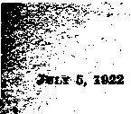

A ' JOUR.NAL- OF - FACT HOPE-AN D-CON VJCll ON
July 5, 1922, Vol. Ill, No. T9
Published every other week at 18 Concord Street, Brooklyn, N. Y., U. S. A.
Five Cent* a Copy—f 1.00 a Yea* Canada and Foreign Countriea, *1.M
Volume 3 WEDNESDAY, JULY B, 1922 Number 73
CONTENTS of the GOLDEN AGE
SOCIAL AND EDUCATIONAL •
Clever Roman Propaganda 617 Rewriting Earth’s Litera-The Hall of Fame ....... 627 ture ..................................628
1 About Santa Claus ............628 Let Us Be True to All ....629
FINANCE—COMMERCE—TRANSPORTATION
German Financial Condi
tions ............ Oli
Economic and Financial
Chaos _____________.___________...61.1
Sale of German Credit ....612
The German Budget ..........612
Pumping the Well Dry ....613
Revenge vs. Common Smuse 613
Fiat Money and Pillage 614
POLITICAL—DOMESTIC AND FOREIGN
Violating Three Constitutions .......................................
Land Grants to Veterans ......... -.....................-
AGRICULTURE AND HUSBANDRY
The Dusy Bee ...................................
SCIENCE AND INVENTION
A Theory of the Formation of Our Earth
HOME AND HEALTH
Iridiagoosis .................................... ~....................
RELIGION AND PHILOSOPHY
Divine vs. Satanic Law ....631
Evolution and the Universe ......................
"All the World’s a Stage” 635
"Pathos”— Past, Present, Future ..........
Kaines of the Patriarchs 638
Studies in the "Harp of
Published erery other Wednesday at 18 Concord Street, Brooklyn. N. Y., . . . ' . U. S. A. by WOODWORTH, HUDGTNGS and MABTIN CLAYTON J. WOODWORTH.......Editor
ROBERT .]. MARTIN .... Business Manager WM. F. HVDGINGS ...... Bec’y and Trew. Copartners and proprietors., Addresa: 18 Concarij Street, Brooklyn, N. Y......IL S. A
Five Cents a Copy — $1.00 a Yeab foreign offices : British : 34 Craves Terrace, Lancaster Gate, London W. 2,* Canadian: 270 Dundas St W_ Toronto, Ontario: Australasian ; 495 Collins St., Melbourne, Australia, Make remittances to The Golden A.O6 fctertd m mond-class matter at Brooklyn, M. X oxter th* Act of Marti) 8, 1870.
>;■ Volume III Brooklyn, N. Y., Wednesday, July 5, 1922 Number 73
German Financial Conditions By Robert f. Grosseii (u. s. Treasury)
T^HE Governments of Europe have not only & . -A- been wrenched in some respects from their p old moorings by the war, but the peoples them-| selves have passed through a like experience, in f some countries to a greater, in others to a lesser, degree. Social unrest is widespread, and while & j the hideous specter of Bolshevism has faded fe- "somewhat, it is questionable whether it is not h merely in a state of temporary quiescence. Indated, and hence depreciated, currencies coup> led with general unemployment due largely to ?; depression in international trade have resulted in creating much dissatisfact’on with conditions | as they now exist. It is believed by some of the f best minds of the world that a new understand-:sr ing must be reached between nations that will put a damper, on military expenditures and stimulate international trade. The depressed . conditions in trade — which are world-wide — “ are due primarily to the exhaustion of buying i power, without which trade cannot thrive. And A a factor of prime importance, and incident to » the exhaustion of buying power, is the break-j^ down of foreign exchange, so that the regular ’■ medium, or vehicle, by which nations traded 1 with each other is to a certain extent useless.
EUROPE DISRUPTED
The scars of Europe and the disrupted relationships, economic and otherwise, which the World War brought about, and the far-reaching shock of which has prostrated the nations, can be healed and adjusted only by the milk of human kindness—a sincere feeling of good will and active desire for cooperation. President Harding in the opening address of the Conference on Limitation of Armament on November 12, 1921, struck this chord when he stated:
“Gentlemen of the Conference, the United States wel-^nes you with unselfish hands. We harbor no fears; we have no sordid ends to serve; we suspect no enemy; we contemplate or apprehend no conquest. Content with what we have, we seek nothing which is anotbr’s. We only wish to do with you that finer, nobler thh.g which no nation can do alone.”
It is a well-established statement of political economy that the welfare of any one country concerns the destiny of all other countries; and until an active spirit of cooperation has been aroused and put into effect, there cannot be expected an improvement in the affairs of the world. Especially is this true in this day of the world’s history, when the nations have been so thoroughly linked together in a community of interests by the telegraph, radio, cable, telephone, railway and steamship lines.
ECONOMIC AND FINANCIAL CHAOS
A significant statement appeared in the Chicago Tribune under date of November 29, 1921, as follows: •
“In Europe is economic and financial chaos. Unless something is promptly done to avert this disaster which approaches with constantly increasing rapidity, it will spread from one country to another, until we are involved in the maelstrom.”
Where suspicions are harbored there can be little or no cooperation; and it is true with na-' tions, as with individuals, that where a nation is in a defensive attitude it is laying itself open to many troubles and often discerns specters which do not exist. It is feared that it is only “the leaves which are for the healing of the nations” [Revelation 22: 2] which will be*effective in remedying the sick condition in which Europe now finds herself.
In the Pittsburgh Dispatch the following statement appeared:
“The disruption of economic Europe ordered by the conference of Versailles, which treated central Europe as a patchwork of political pawn, disregarding its eco-
nomic unity and necessities, has defied all political or military efforts to remedy it. It has been a ease of ‘all the king’s horses and all the king’s men’ being unable ‘to set Humpty Dumpty up again.’ As America's onetime leading financier once said: ’You can’t unscramble eggs’.”
It has been estimated that two days’ work a week is sufficient to supply the needs of the people of the United States at the present time. This being true, the remaining four work days of our factories should be devoted to production for foreign business, were it not for the fact that our foreign trade has been largely suspended.
The German Foreign Minister recently said that the more Germany works, the more other nations must cease working ; and the statement was of sufficient importance to cause the rest of the world to pause and think. He also stated that in Great Britain and the United States, the two greatest industrial nations, there were, in the one three million, and in the other six million workers out of employment, while in Germany there are less idle than ever before.
SALE OF GERMAN CREDIT
Germany has no money with which to satisfy the Reparation demands, and in order to meet the first payments she was obliged to sell her credit. It appears that the low-water point has been reached, as evidenced by the low price of the mark—descending to about a third of a cent. The payment of one billion gold marks ($238,200,000, in United States money) on Reparations account was done only by drawing heavily upon the Reichsbank (Bank of the Empire). As a factor in this payment, a large amount of the silver, which the bank has held in a special account since the demonetization of silver in Germany, was used to establish credit balances in New York, where it brought about 50,000,000 gold marks ($11,910,000), and also it was necessary to draw upon the gold reserve of the hank to the amount of almost 68,000,000 gold marks. This reduced the holdings of the Reichsbank so that the reserve stood on August 31, 1921, at 1^023,708,000 gold marks ($243,847,245.60). This drawing upon the resources of the Reichsbank Was necessary, in spite of the fact that the Government had been makingevery effort to increase its stock of gold for some time before the payments became due, by buying through the Reichsbank and the postoffices, gold coin and
gold by weight at special prices, corresponding roughly to the value of the paper mark in wor^ markets. . '
In addition to the payment of one billion gold^* marks as indicated above, Germany has up to i April 30, 1921, made payments on Reparations ' account amounting to 4,554,792,000 gold marks. This covers the period November 11, 1918, to April 30, 1921, and is divided as follows:
MARKS
Payments in cash ........................ 93,334,000
Deliveries in kind:
Ships ........................................... 276,331,000
Coal .............. ;___________________________________ 437,160,000 ;
Dyestuffs .................................. 36,823,000'
Other deliveries .......................................................... 957,040,000
Immovable property and other assets ............2,754,104,000
total----------------------------4,554,792,000''’,
On January 15, 1922, a quarterly payment of 500,000,000 gold marks was due; and if the*-.terms of the Wiesbaden agreement were CKt-ried out, it was seen that a large part of that payment would be made in the form of goods. : This agreement, which was concluded early in October by the French and German Ministers for Reconstruction, provides that Gerihariy shall supply France with goods up to a value ' of 7,000,000,000 gold marks during the next four ; and a half years.
THE GERMAN BUDGET
One of the perplexing problems before the German Government is that of increasing taxes in order to meet ordinary Government expend-. itures and payments on Reparations account. In' July, 1921, Dr. Wirth, the Chancellor,'put be-’ fore the Reichstag the Government’s proposals for certain taxes to meet ordinary Government expenditures. Estimates for the year were increased since the budget was first presented. German Government expenditures estimates for the fiscal year 1921 were as follows: ; .
MARKS ;
Ordinary budget ............................... 48,459,000,000
Extraordinary budget: .. ...
Railway deficit ...................... 14,368,000,000
Post and telegraph deficit 4,515,000,000
Other extraordinary expenditures__ 40,797,000,000
The'•extraordinary budget contained the lowing items to be paid on Reparations accoun
., MAKES
For delivery of living animals 3,000,000,000 ^Compensation for delivery of ships -........- 1,500,000,000
.Value of Rys. in former German territory 1,500,000,000 Sundry Reparations payments -------- 8,600,000,000
. . ' total..................... 14,600,000,000
This does not include, however, the amount ? of two billion gold marks due this year, nor the equivalent of twenty-six percent of the export ’ trade, two sums which will total, it lias been . estimated, 42,000,000,000 to 53,000,000,000 paper ' marks.
i The amount of available revenues with which ' the Government will have to meet expenditures ‘ has been placed at 58,959,000,000 marks, which : leaves a deficit of 49,180,000,000 marks, not including the amount of two billion gold marks and the twenty-six percent trade tax. The deficit in the budget is being taken care of by discounting Treasury bills through the Reichs-bank. On May 31, 1921, the floating debt was j 199,000,000,000 marks, and the funded debt was 78,350,000,000 on the same date, making the total debt of Germany to be 277,350,000,000 marks (about 69 billion dollars).
PUMPING THE WELL DRY
The .only way Germany can satisfy the Repa-s .rations demands is by intensive production, but v; for this she lacks raw material, which has to ' be purchased in foreign lands. For these needs she lacks the ability to pay, except in credits, ' which sometimes cannot be accepted because of the risk involved.
In order to lighten the load that Germany has to carry with respect to meeting payments in -~—gold, France has entered into an agreement with Germany covering a period of five years. This ■ agreement covers the delivery of manufactured goods to the amount of seven billion gold marks ($1,667,400,000). The amount delivered by Germany will depend upon the wishes of theFrench, as the agreement does not require them to order goods from Germany. Up to 1926 the Germans ' will be credited by the Reparations Commission with at least thirty-five percent of the goods de- livered each year, provided that the amount to be credited in any year does not exceed one billion gold marks. From 1926 to 1936 the amount credited each year is not to exceed the amount . of Reparations payments due France. These deliveries of goods for the payment of Reparations debt will greatly simplify the task before the leaders of Germany. With respect to the delivery of goods the question now is, not how much Germany can pay but how much the Allies can afford to accept.
The London Daily Chronicle states that,
“In France, the Government has estimated a budget deficit in 1922 of 1,625,000,000 francs, and France relies largely on German reparations payments to make good this huge deficit. If the German mark becomes practically worthless, then the value of the German indemnity payments would disappear. The possibility of French bankruptcy might then loom on the horizon.”
Already France has floated some large loans, the funds of which were for the restoration of the devastated regions. These loans were based on German Reparations payments. Should such Reparations payments fail to materialize it is easy to foresee where France financially would face disaster, as the gross debt is already at a ruinous figure.
The French Government contemplated an expenditure for the year 1921 amounting to 42,412,000,000 francs, as contrasted with receipts of 23,312,000,000 francs, thus having a deficit of about 19,000,000,000 francs to be procured by the flotation of loans. Of this deficit about 16,000,000,000 francs were regarded as eventually recoverable from Germany under the terms of the peace treaty. During the first half of the year 1921 the total public debt of France rose from 245,000,000,000 francs to 264,000,000,000 francs (approximately $52,000,000,000, computed at the standard value of the gold franc).
REVENGE VS. COMMON SENSE
The Philadelphia Public Ledger, in making some terse remarks concerning the growing tangle that has enmeshed France and England states the following: . '
“At Versailles France wanted revenge and reparations. England was fearful of a policy of revenge. It might bring new wars. Clemenceau wanted both revenge and reparations, to eat the German cake and have it. He had his way at the time.
“France backed Poland against Russia—and heaven knows Poland needed backing. England was of the opinion that Poland had loosed the red avalanche on herself by letting her white eagles soar toward Moscow.
“Then came Upper Silesia. France standing with Poland, while England was disposed to see reason in some of the German claims. When Germany stubbornly failed to do anything about reparations, the French were ready to march on Berlin, if need be; but the Eng-*
fish held back. There were other balances than trade balances in the back of the British mind. ‘
“It was and is the same in the Near East, where England, guarding the Suez gate and fearful of a Mohammedan mixed politico-holy war, has wished the Greeks Godspeed in their attempts to chase the Turk back into his deep Asiatic homelands. France has leaned Turk-ward, has made the treaty of Angora, is getting out of Cilicia, and is burning incense to the beard of Mohammed.
“England is fearful of a, dominant France on the continent. Right now France is dominant there. Whether it numbers 600,000 or 800,000, the French army is the best and biggest military machine in the •world today.” .
The maintenance of such a large military force means large expenditures, which with the obligations growing out of . the public debt, together with those funds being devoted to restoration work, makes the current budget far exceed the receipts, a condition of things that cannot long continue. To bridge the chasm between expenditures and receipts most of the European countries have been keeping the "printing presses going printing fiat money, with the result that with the exception of Switzerland Europe today is deluged with a sea of paper money. A day of reckoning must come.
Recent accounts in the papers describing the mobbing of leading hotels in Vienna, in which the people took nearly everything they could lay their hands on, read strangely like the description of disorder as given in the following paragraph of similar happenings in the year 1793 in France:
FIAT MONEY AND PILLAGE
“The washerwomen of Paris, finding soap so dear that they could hardly purchase it, insisted that all merchants who were endeavoring to save something of their little property by refusing to sell their goods for the wretched currency with which France was flooded, should be punished with death; the women of the markets and the hangers-on of the Jacobin Club called loudly for a law To equalize the value of paper money and silver coin.’ It was also demanded that a tax be laid especially on the rich, to the amount of four hundred million francs, to buy bread. Marat declared loudly that the people, by hanging shopkeepers and plundering stores, could easily remove the trouble. The result was that on the 28th of February, 1793, at eight o’clock in the evening, a mob of men and women disguised began plundering the stores and shops of Paris. At first they demanded only bread; soon they insisted on coffee and rice and sugar; at last they seized everything on which
they could lay their hands—cloth, clothing, groceries, -and luxuries of every kind. Two hundred such places were plundered. This was endured for six hours and — finally order was restored only by a grant of seven mil-* lion francs to buy off the mob.” ■»
At last the amount of paper money outstand- .. ing was 40,000,000,000 assignats, by which time it had sunk so low in value that no effort was ever made to redeem it. It was simply abandoned as worthless.
Part of the depreciation of the mark is attributed by officials of the German Government ■ to speculation in exchange, and it is planned to introduce as one of its new tax measures a bill t taxing every exchange transaction. The decline in the foreign exchange value of the mark has ■ made the whole German population want to pos- -sess goods rather than marks. According to 1 cable dispatches retailers’ stocks have been al- ; most completely exhausted by the excited buying. - \
Foreign trade figures for September show that the unfavorable balance in Germany’s foreign commerce increased during the summer of 1921. For the five months, May to September, -inclusive, the adverse trade balance was 9,147,000,000 paper marks. One reason that the value . ?. of the import trade exceeds that of the export trade is the disparity between German prices and those of the rest of the world. The Germans ' are selling cheap and buying dear, and the dif- . ference between prices at home expressed in -terms of marks increased during the summer ■; and fall. - ;
In order to augment the domestic stocks of grain Germany made heavy importations of grain in August, amounting to nearly fifteen million bushels of wheat. When the inflated < mark met the unusual volume of foreign bills ‘ the mark naturally fell. With the fall of the : mark imports were checked, exports increased.
CREDIT AND TRADE LANGUISHING
Negotiations of the Government to raise a ; loan to meet Reparations payments have been under way with German Industrials, but so far have' not been effective, while the effort to raise; ; a loan in London has failed. ;
In the second week in November, 1921, the . ; Reparations Commission went to Berlin to investigate the situation there at first hand.The outcome of the visit was a telegram sent to Ber- ' lin on December 2, 1921, urgently requesting .<
the German Government to give its full attention to the steps immediately necessary to in-*^sure payments of the January and February installments due on Reparations account. The telegram emphasized the fact that the Reparations Commission is persuaded that the difficulties encountered by the German Government—difficulties Avhich are closely connected with the fall of mark exchange—are of a financial rather than an economic character and are in a great measure due to the failure of the German Government to balance its budget.
In the case of Germany it is difficult to estimate the total amount of Government expendi-’ tures. No budget was voted by the Reichstag - for 1921-1922, and the Government continues to cover the difference between receipts and expenditures by discounting Treasury bills with the Reichsbank. For the first six months of the fiscal year, beginning April 1, 1921, the difference between income and outgo has amounted to 44,000,000,000 marks; and, in a recent speech before the Reichstag, Hermes, the Minister of Finance, estimated that before the year was over the deficit would reach 110,000,000,000 marks (approximately $27,000,000,000, if based on the value of the gold mark).
Developments are making it clear that the economic recovery of Europe awaits the restoration of foreign trade; and the improvement of foreign trade involves two factors—a rectification of currency and exchange conditions between countries, and improvements in budgetary condtions. The Financial Conference held at Brussels reached the conclusion that foreign exchange stabilization and rectification must be considered almost out of the question in the absence of better budget arrangements. The conclusions then reached (in the autumn of 1920) are even more pertinent at the present time. During the year a large amount of national revenue in most countries has continued to be devoted to the development of armaments, thereby preventing the various governments from restoring their budgets to equilibrium and compelling them to rely largely upon short-term borrowing in the effort to meet current expenditures.
In view of these conditions it can readily be seen that an effective reduction in naval outlay, if carried through to success, would result in a marked betterment at the present time, while a ^reduction in military outlay would probably
furnish in some countries an even more important means of balancing their budgets.
AN UNSPEAKABLE CATASTROPHE IMPENDING
As to Great Britain’s attitude on reparations and the present condition of the German Government the following from a recent speech by the Chancellor of the Exchequer is of interest:
“The collapse of Germany, if that were unfortunately to be caused by any action on the part of the Allies, would be a misfortune, not only for Germany, but for Europe and for the world. What are we suffering from today? Among other things, perhaps, and more than any other things, we are suffering because there are so many derelict countries in Europe, at the present time. Austria and Russia, which used to be our customers, are no longer able to purchase our goods; and to that cause you can attribute a certain amount of the unemployment and depression which exist among us at the present time. But suppose you added to those countries a broken Germany. The catastrophe would be unspeakable. It would be disaster not only from the economic point of view, but no man could foretell what its reverberations would be in the political sphere. What then if we were to put pressure upon Germany? Well, she might be able to pay or she might not; and that is the question, the immediate question, which has got to be inquired into.
“But, if concessions are to be made, there are some things which first ought to be observed. Germany, as a whole, is saying that she cannot pay Reparations which she is under obligations to perform, but she is doing several things which act against the possibility of her meeting her obligations. Let me take one or two examples. She is subsidizing the price of bread in Germany. That is done at the expense of the taxpayer. It makes a deficit in the revenue of the State, but its effect in Germany itself is this: The industrialist employer is able to buy his labor at a cheaper wage because of the subsidy to bread which is given by the State.
“In another direction also she subsidizes the employer. The railways which are operated by the State are run at a loss. I think in the last quarter it amounted to something like 15,000,000 pounds sterling. That creates another tap in the State’s budget, and it enables the industrialist to get his goods carried at a cheaper rate than he ought to obtain. Coal is being sold today in Germany at about half the price which is paid for coal anywhere else in the world. That is another form of State subsidy; and therefore while the German State . itself is paying ont money from the pockets of the taxpayers, there are certain individuals at least in Germany who are growing wealthier by reason of the. subsidies which are granted by the State.
“If we are to forego our just rights in relation to German Reparations, even for a period, which I do not think we ought to decide to do, but if we are, one thing
Is plain: Germany must get rid of those subsidies in order to put herself in a position to perform her proper obligations to the people to whom she is indebted. One more thing, she must make her taxation yield revenue which will meet her expenditure; within some period to be fixed she must cease to print paper marks in order to meet Jier deficit.”
German inventive genius is now at work trying to solve some of the perplexing problems that have arisen as a result of the loss by Germany of some of what was once valuable territory in that it produced those commodities which ministered to her industrial life, and some of the problems seem to be on a fair ways toward solution.
The German character in endowed with a spirit of perseverance and is possessed of an amount of egotism that is monumental; but whether or not the nation will be able to carry the burdens and meet the problems that now confront it is problematical.
■-1
The Business Situation
TT IS a well-known fact that periods of depression and stagnation have followed the great wars of the last' century, owing to the disorganization of the affairs of the various nations, made complex through the ever-increasing community of interest between them and accelerated by the growth of knowledge and communication in these last days. It is not a surprise that a normal setback should take place today, as after the wars of 1812 and 1861.
However, the situation today is not only much more'complex, but beyond normal. The situation is appallingly abnormal and commands attention.
AN IMPOSSIBLE SITUATION
Europe is virtually bankrupt through the multiplied debts of previous conflicts, especially the last; and the value of money is so far out of proportion to that of the United States that to deal with us requires much advancement of credit on our part until they are better off financially, the scaling down of wages in this country to compare with those of Europe (an impossible task) or by raising the tariff rate sufficiently to cover the difference between the ratio of wages and the medium of exchange (and this is possible although suicidal for America so far as exporting her goods is concerned). Manufacturers must close down until this is righted if for no other reason; and this moans starvation, famine, suffering.
On the other hand we have the capitalists of America and Great Britain conspiring to crush labor and to place the workmen on the plane of slaves, thus causing much discontent and slowing down of effort as well as obstinate evasion of work.
By J. II. L. Tralttfelter :
, >.■
Mechanical devices have increased in kind 5 and volume during the last forty years to such extent that the use of human labor is largely dispensed with.
Trading must necessarily be reduced through ’ the needed economies at home due to the ever- ( mounting cost of living, despite the promised _ reduction through the introduction of machin- y ery. The chief reason for this is the capitalization of property and inventions beyond their U real value. All indebtedness demands interest • < and interest means that more profit must be made. •
STOCK ISSUES INCREASE COSTS . '
Rightly so, that law prohibits the issuance of -stock for less than its par value in property or cash. But there are' no less than three different ‘ methods to evade it: (1) By issuing stock for -overvalued property, (2) by stock dividends ( where an equivalent value in property has not ’ been accumulated and (3) by consolidations under statutes whereby good-will is capitalized. i The common method is to issue the stock in ex- ' cess of the value of the property and by agreement to contribute a percentage equal to the excess valuation back into the treasury, to be ■ sold at the price the market will bring.
The best illustration of this ever-growing tax in profits under the name of interest is. given ;
by the tax methods of the city of Baltimore and ~
possibly other cities, where the assessment is * increased but the tax kept constant to compare favorably with others. Whether you increase the tax rate (the interest) or the base (the capital), the result will be to add to the amount extracted for tax. The debts of the industries of ... the country have reached a pinnacle so far as thtt^k
/' profits exactedfrojuthepeople in thesaleof goods to pay the interest to sustain them is the measure k to come from profits. The margin between the earnings of the laboring classes and the cost of living is now in favor of the cost of living. Surely the promoting game was great while it lasted. T Lack of faith on the part of man in God and t'. His Word, superinduced by the anti- and un-
p „ scriptural teachings of a reprobate clergy has
weakened faith in man—and every one knows v " that business is conducted largely on faith and
| confidence in men. The getting down to a cash
* basis without a medium of exchange sufficient * in volume operates to stifle the free course of ' . such transactions. One case in mind is the situ
* ation in South America. Opportunities are present for shipments there if America will accept ninety-day trade acceptances or instruments of indebtedness of these countries. The
' business man says :“No cash—no business.”
* ■ The fanatical efforts of the religious reform-
i ers to put the country into a straight jacket has no doubt contributed toward making business rv • men timid over investments in such lines as are fv _ assailed.
The soothing, palliative doctrine of optimism x was injected into the minds of men to blind ' them to the result of policies and practices giv-‘ ing them a shallow exuberance of feeling, en-r- thusiasm, and hope as a substitute for the sound , logic of cold facts. Urlder its delusive sway the course followed is not considered so long as everybody is bubbling over with optimism. This theory has exploded.
BAD PROSPECTS
To build a foundation for future prosperity for all men, society must be lifted up to a condition of faith in God and man, present capitalized indebtedness must be scaled down and thereby interest reduced (the boon of the nonproductive and the burden of the productive), to a point comparing with the real value of the property represented. This will in turn prepare the way for the laboring man to share in the benefits of the labor-saving machinery by the reduction of the number of hours worked. Much of the European indebtedness must be cancelled in order that foreign credit may rise, and likewise the rate of exchange. To do all this would mean a great loss to those in power and control. To change a religious fanatic is impossible. Certainly the prospect for the immediate future in business is gloomy when the false spirit of optimism is ignored and reason is cop-suited.
Is it not possible that these conditions are those described by the prophet Zechariah (8: 10) when he said that ‘^before those days there was neither hire for man, nor for beast,” and by the prophet Isaiah (35: 8) who declared that “the wayfaring man ceaseth,” as a prelude to the clash of forces ending the present age and introducing the new? Can we not picture in our minds the exercise of the power among those in control in the dispensing of the few jobs remaining for the benefit of their allies as is indicated in the thirteenth chapter of Revelation ?
j. 1' AM employed as a movie operator: and it X has just come to my attention that my employer, who is a Catholic, has been inserting a ' ' small advertisement in a small public-school
i . paper which states that this slip and 5 cents
* will admit one to a show on Saturday afternoon. * Regular admission for children is eleven cents.
The Saturday feature picture was very favor-G. able to the Catholic faith, extolling the virtues * of the priests, and showing great reverence for them. I am wondering if this is not a scheme . to inoculate the Protestant public school chil-- dren with Papal doctrines and practices and vir-
; tues. The offer applies only to children under
1'V ' twelve years of age.
I am also wondering whether the church is paying the difference in admission price, according to the number of slips turned in. I do not suppose they would try this scheme with any managers except bonafide Roman Catholics. Big business and the churches seem to be using the movies for all they are worth, lately, doping the common people with spurious religion and other false teachings.
It seems to be parallel with the time preceding the French Revolution, when the people were filled full of false religion, which only tended to make them the more bitter when the time came to spew it out. -
asm?
Benjamin Franklin, in his “Autobiography,” writing of his ancestors, has this to say: “This obscure family of ours was early in the Reformation, and continued Protestants through the reign of Queen Mary, when they were sometimes in danger of trouble, on account of their zeal against popery. They had got an English Bibl^ and to conceal and secure it, it was fastened open with tapes under and within the cover of a joint-stool. When my great-great-grandfather read it to his family, he turned up the joint-stool upon his knees, turning over the leaves then under the tapes. One of the children stood at the door to give notice if he saw the apparitor coming, who was an officer of the spiritual court. In that case the stool was turned down again upon its feet, when the Bible remained concealed under it as before.” -
THREE PROVISIONS FOR LIBERTY
Many such occurrences were doubtless fresh in the memory of our forefathers who wrote the Constitution of the United States; and they, realizing that the spirit of intolerance would live on, embodied in that Constitution the following clause:
“Congress shall make no law respecting an establishment of religion, or prohibiting the free exercise thereof; or abridging the freedom of speech or of the press; or the right of the people to peaceably assemble, and to petition the Government for a redress of grievances.”
Our forefathers here in Virginia, realizing the wisdom of this, and knowing themselves of the intolerance which preceded the birth of our nation, embodied in the Constitution of this state, on June 13, 1776, a like clause, and this clause was again stamped with approval in 1902. The exact wording of this passage in the Virginia Constitution reads:
“That religion, or the duty which we owe our Creator, and the manner of discharging it, can be directed only by reason and conviction, not by force or violence; and, therefore, all men are equally entitled to free exercise of religion, according to the dictates of conscience; and that it is a mutual duty of all to practice Christian forbearance, love and charity towards each other.”
There is yet one other Constitution to which I wish to refer. I have not a copy handy, therefore, I cannot quote; but I can state with certainty that one clause of this Constitution binds those who are under it to support the United States Constitution. The Constitution to which I have reference is that of the American Legion.
Two things cause me to recall the' incident which I shall relate: (1).It is the second anniversary of my life in the truth; and (2) the reading of Franklin’s “Autobiography,” quoted ' above, coupled with the fact that these same city . officials of Roanoke are up for reelection.
VIOLATIONS OF CONSTITUTIONS
All Bible Students will recall, how, in spite of National and State Constitutions, they were . compelled for a period of years to keep their ' “Scripture Studies” under a “joint-stool.” This, however, was only a part of the religious in- ' tolerance of our city which led to the following " unlawful act, perpetrated under disguise of “law and order.” Bible Students know, too, that nothing ever “happens,” to Bible Students, and . they will understand why such things occur. \
Mr. A. H. Macmillan, of Nova Scotia, was scheduled to deliver the lecture, “Millions Now •' Living Will Never Die,” at the National Business College, Roanoke, Virginia, United States of America. The meeting had been well advertised and quite a crowd turned out to hear him. “Then,” if I may borrow a phrase much in i use that day, “the fun began.” Before Mr. Mac- ’ milhin could enter the hall, he was grrested by an officer. This officer had no warrant; but Mr. Macmillan went quietly with him anyway, not desiring to violate the law in the slightest de- . gree. He was carried to the jail and locked up, though no charge was made against him, and ' though he repeatedly inquired to know the charge. He was held for several hours and then released to catch a train for New York; but no “
warrant was ever issued, nor a charge of any
kind lodged against him. After he had been
taken to the jail, the contents of his suit-case
were emptied upon the floor in an endeavor to find “something,” I know not what. The address ' , that Mr. Macmillan was to deliver was made at the same hall on the following Sunday by another speaker. True, Mr. Macmillan might have gotten redress to some extent in the courts; but . for some reason that his persecutors perhaps cannot yet understand, he did not resort to such methods.
I think, however, that I could enlighten them on the subject; for instance, when Peter, coming to the Lord’s defense after Judas had be- d trayed Him, cut off the ear of one of the enemy, the Lord reproved him, saying, “Put up again ■ > thy sword into his place: for all they that take
i - ' x J the sword shall perish with the sword.” (Matthew 26: 52) Again, "And whosoever will not receive you, when ye go out of that city, shake off the very dust from your feet for a» testimony against them.” (Luke 9:5) There are-many other instances alsoj which Mr. Macmillan perhaps thought of; for the conditions in Christ’s day were very much the same as today.
SHEEHAN OF THE LEGION
Mr. Macmillan was arrested on complaint of one Timothy Sheehan, a Norfolk and Western Railway machinist, whose brother I understand is. City Councilman Sheehan. Timothy Sheehan was also a member of the American Legion; and the “fun” was pulled off, it is alleged, in the name of the Legion. There are five members of our Council, three of whom are, the Mayor, W. W. Boxley (who gave the orders in the case of the arrest of Mr. Macmillan); R. H. Angell; and Sheehan, whose initials I do not know. I had never known the Mayor to act on his own initiative before; so when he made this move at the request of the Legion without even consulting Mr. Angell, he must have felt quite shaky. Whenever there is a speech to be made or anything of importance to be done, it is usually done by Mr. Angell, who acts as his logos, so to speak; and anyone may see that in this case he violated two Constitutions, while the Legion participants violated three. We see also that they were the real violators of the law.
the but for
■ The writer was not then a member of International Bible Students Association, I date my age from that day. I had felt sometime that there was a Protestant-Catholic combine in the politics of our city; and when the Mayor acted thus, I knew instinctively that there was merit in the thing he was fighting. Therefore I-immediately set out to find what I could concerning the matter—I was then an infidel product of the churches. Their different creeds and doctrines were such a jumbled, tangled web that I had long since thrown them over along with the Bible. I saw, too, that none of the men with whom I came in contact- believed the things taught; but as stated, I realized that here indeed must be something meritorious, so . I procured the Seven Volumes of “Scripture Studies,” and as would be the case with almost all rational-minded people, I found that here was truth! Here was Bible harmony! The Bible became a new book to me, and ever since, I have been daily feasting on its wonders ;_and since readjusting my telescope, I accept it all— from the first line of. Genesis One to the first line of Apocalypse Twenty-Three.
TWENTIETH-CENTURY intolerance V
Now, what does all this show to us? To me, it illustrates two things very positively: (1) It illustrates the fact that nothing ever “happens” to the I,ord’s people, and that religious intolerance has the same effect today, that it had in Reformation days; (2) it illustrates the fact that right on up to the time when the Stone, mentioned in Daniel 2: 34, shall have finished its crushing work, zealous Bible Students are going to study and expound the Scriptures, while the liberty haters and religions bigots are going to try to prevent it. .
This article would not be complete, did I not compliment you on your articles, “Go To Church, Thou Fool,” which tille, I understand was taken from The Banner-Herald of Athens, Georgia, and was a slogan adopted by ten- of the principal churches of that city. This reminds me that even as far back as Franklin’s day the “Protestants” had begun to slip back into the outstretched arms of the mother, church; for, while Franklin advised his daugh- ■' ter to go to church, I fed certain that it was simply because there was no I. B. S. A. class for her to attend. Here is what he said to her: “I do not mean to say that you should despise sermons of preachers you do not like; for the discourse is often very much better than the man, as sweet and clear waters come through very dirty earth.” .'
Page 464, paragraph 2, line 14, should read: “islands.” Page 467, paragraph 2, line 2, should read: “Kagoshima.
Page 468, paragraph 1, many centuries, reaching its apogee (or zenith). ------» under the Sung dynasty.”
line 22, should read: "with their cannon;
Page 466, paragraph 3, lines 4 and 5, should read: "Its civilization slowly developed, during
Me. Sherman Rogers, in an interview to the Boston Post, favors land grants in lieu of a borius to soldiers. The idea is not new; and, I believe, veterans of the Mexican War were given such grants when they applied for them. Where is this land to be found, and what will be its value? As long ago as 1876, in our Western States land was being taken that would blow away as soon as the bunch grass on the surface was destroyed, and crops were taken off that did not pay for the threshing.
Allowing that the young Veterans secure land, how are they to work it? Most of them are unmarried and have little or no money; and the greater number are from the cities, and have no training to qualify them to follow an occupation that requires a knowledge of soils, crops, and business.
A kinsman of mine, who went to a farm in Ohio after the Civil War, thought that after the crop was planted he would be able to sit in the shade arid watch it grow. When he found that the work was then but just begun, he returned to his job in the Navy Yard, sadder and wiser.
A very hard-headed Scotch farmer, for whom I worked years ago, declared that if he got fifty cents a day for his labor he was doing well. He had 160 acres of good prairie land with a house on it, a team, two cows, pigs, and hens. With ■ a wife to help run the place, he was able to work J seventy acres. Anyone that has had to do with / a farm will tell you that a single man cannot , run one alone, even though he may have a team and other stock; and that the more stock he has, ' the less farm work of other kinds he will be able to do.
To give the land to the Veterans will be to give the land over to speculators, who would be able to buy it from needy holders, who would not be able to work it and, in many cases, would not be able to reach the place of its location. The,banks will not advance money on the security of unimproved land; and most of the grants would lie like our railway grants, a hindrance to the development of the country.
The young single man that tries to farm it alone will find himself in as bad a fix as the widow with five or six young children, the only difference being that he can, if he will, dispose of his encumbrances to the butcher. The single man who has found himself tied to a cow, and a bunch of chickens that had to be fed regularly, ' will understand what it means, and will most, emphatically say: Don’t.
How About It, Mr. Ratti ?
By L. D. Barnes
It seems rather strange to one not so initiated that a fellow making such claims would have to specialize on knowing “what not to do.” Some exhibition of power that would distinguish a worthy successor of St. Peter, or the “Vicar of Christ,” would be more in order. Peter just would not stay in prison. He could not be kept there because the angel of the Lord turned him out. Jesus insisted on going about and doing good. Evidently there is a “nigger in the woodpile” because a “Rector of the World” should be a citizen of the world, and able to command that world’s respect through good and unselfish deeds performed for its lasting welfare."Nearly 2,000 years”—less 517 years—of this “RectoP’ and “Vicar” business should begin to show up on the credit side of the world’s ledger.
We humbly suggest that, in this hour of the world’s sorest need, the pope divest himself of empty and meaningless titles and lay aside the musty robes and gowns and pompous claims of the darker past, or else produce the goods. The world is weary of this mountebank acting and this Santa Claus deception! Put up, or shut up!
THE following from the pen of Arthur Brisbane, one of the great syndicate writers, and from his oft and friendly references to the Church of Rome, evidently himself a Catholic, deserves notice:
“Cardinal Eatti becomes pope under the title Pius XI. His photograph shows a strong, thoughtful face, with a high forehead, a most serious expression. Upon him falls a burden that the popes have carried for centuries, almost 2,000 years. Their influence reaches into every corner of the earth, into ice houses in the North, and huts on the equator. They must understand not one nation but the whole world. And above all they must know what not to do.”
The photographs of plain Mr. Ratti do indeed show a very good face. But the photograph of “Pius XI” in medieval robes shows a frightened, cringing individual. The same face is hardly recognizable. Evidently the feeling of being crowned “Vicar of Christ,” “Successor of St. Peter,” and “Rector of the World,” etc., etc., ad infinitum, was not accompanied with the confidence and inherent and inerrant powers that should go along with the exalted “office.”
The Busy Bee By Joseph Greig
THE most careful art of the engraver, when viewed under the microscope, reveals but scratchwork, while nature has engraven upon every grain of sand the most beautiful crystals of which the mind could conceive. This thought of the crudity of human workmanship and the economy and beauty of God’s workmanship was forced home upon the writer by reading the following article on “How Bees Keep Warm,” taken from the Philadelphia Public Ledger'.
“Next time you feel chilly try to warm yourself by shivering. That is the way bees do it. Bees are coldblooded animals. Nevertheless, they must keep reasonably warm in winter, lest they freeze. The hive is usually out of doors; it contains no heating plant, so the bees are obliged to furnished their own heat.
“It is an old story that the worker bee literally works herself to death. In the summer time, when there is a plentiful supply of nectar to be gathered from flowers, ' she toils so hard that an insurance company would not guarantee her life for more than six weeks. In winter, under favorable conditions, she may live six months.
“But during a very cold winter bees have to work so hard to keep warm that by the time summer arrives • they are unable to perform properly the arduous tasks incidental to building up the colony to its full numerical strength. And they die off faster than their places are taken by newborn members of the community.
“When, as winter comes on, the temperature gets down to a certain point the bees gather into a spherical cluster in the hive, those on the outside forming a sort of shell, with their heads toward the centre. The shell may consist of several layers of bees, which move actively about, fanning with their wings and agitating their bodies with a kind of shivering—the object of this performance being to keep the cluster warm. Incidentally the shell serves as a heat-insulator. The bees inside remain quiet, except for occasional shifting of position. With the help of proper aparatus, the amount of energy developed by a man, or a dog, or a horse, can be determined by measuring the heat given off by the body. All of the energy produced by the burning of food as fuel in the body eventually appears in the form of heat, . which is reckoned in terms of calories.
“Thus the heat (or energy) output of an average man actively engaged at hard work during the day is about 4000 calories in twenty-four hours. The daily output of a lumberman toiling arduously in Northern woods in the winter-time might be as great as 7000 calories.
“The bees have got even the lumberman 'beat.’ Two scientists, R. D. Milner and George S. Demuth (the latter a bee expert), tried the thing out recently with a' colony of 9635 bees, duly counted. They found that the energy production of each bee was much greater, relative to weight, than even that of the lumberman; and it was maintained not merely for a short time, but
through the whole twenty-four hours and the whole winter.”
EFFICIENCY AND FIDELITY
Such exactness and a rangement as noted in the foregoing should eidist our deepest trust in ' the primal work of the Logos throughout all the • vast expanse of nature. Moreover, such faithfulness in the minute things of the lower orders, must likewise draw out the finer responses of all intelligent beings unto praise and love. -
The story is told of an atheist who while crossing a pumpkin patch stumbled and fell hard to the ground. Arising in anger he cursdd the Maker of such handiwork, saying: “If I were God I’d never put vines on the ground for people to fall over. Now look at that big tree with little acorns on. Why didn’t the Originator put the pumpkins up there and the acorns on the ground ?” Meanwhile the speaker had approached the tree, hat off. Hardly were the words out of his mouth when an acorn fell sharply on his bald head. Crying out with pain the atheist exclaimed: “I’m glad that wasn’t a pumpkin!”
Surely it is folly to try to improve on nature.; Throughout all eternity the eye will never tire of examining the wealth yet hidden in nature’s laboratory. Indeed, the trouble has never been with the paradise of God, but rather in the - •_ “prodigaling” of the human heart from the great Father love. Soon this barrenness of soul is to feel its native hunger ;man will return to the Giver of every good and perfect gift. Witness then the flux of blessings world-wide in harmony with every divine tenderness and grace. All hail such a reconciling prospect and such a ~ giving-up of self upon Jehovah’s footstool!
As mentioned heretofore in some of our articles in The Golden Age, this joy and oneness can be experienced now rather than be postponed to a distant time when force will decide the issue. Furthermore, while knowledge has < much to do with our focus on things of the kingdom, nevertheless, love must take the initiative and soften us to warmth like the busy bees by cuddling up to the Center of all attraction, the true God of love and of all comfort, the compas-' si onate One.
Therefore let us become bees of this hive during the long cold spell of sin’s winter, ready at the signs of spring to gather more honey from the blooms of the incoming Golden Age. Let lis determine at once to erect as many barriers f6 temptation as possibly, making the tongue an
621 ,
Brooklyn, N. X
agent of healing and an insulator against coldness. Then we shall not need to answer like the man of Dundee who, when approached by the army officer who came asking for weapons of war, replied: “Sarah, gangawa and hold out your tongue for the mon!” Instead, we shall possess the simplicity of the other Glasgow mother who sent her two lassies to America with a Testament in their pocket. When they reached New York, unable to make anyone understand them, mother-instructed they met each enquiry by pointing to a verse in the book and to the name of their destination. It is needless to say they arrived safe among their relatives; for the passage read: “Inasmuch as ye do it
unto one of these my little ones, ye do it unto me.” .' .
Will not such pitiful things melt many a heart soon? And so while all of us are cold-blooded, creatures like the bees by reason of the deflection from the image of the tender One, may we continue to spend the time of our sojourn in . hope of the glory of God when He opens His garden afresh and satisfies every living thing. (Psalm 145:16) It is the contemplation of these glories in nature and in Holy Writ which weans us from the things of sin, hence furnishing the correct way of being lifted up from the “pit of i noise.”—Psalm 40: 2, margin.
Compiled from the writings of Pastor Russell
IT IS very interesting to trace the theory of the development and formation of the sun and planets of our solar system and particularly the various stages of earth’s development.
In a remote period all the matter which now makes up our sun. and planets was in a nebulous condition. A nebula is an immense mass of intensely hot material in a gaseous state. The nebulous mass, as it gradually and slowly concentrated, drew together into a more dense condition and gradually set up into a spiral motion ; the greater mass of the formation concentrating at the center. As this rotative motion continued through untold periods of time the -central part gradually condensed into a large spherical body, while lesser portions of the gaseous masses which surrounded the central portion also condensed into smaller and independent bodies, these bodies continuing to revolve around the main central body and held at their respective distances by the balance of two opposite forces, namely, the inward attraction of the main central body and the opposite centrifugal force of the smaller bodies. These smaller bodies, being less in mass, naturally cooled down comparatively rapidly on account of being separated from the main central mass. The smaller bodies thus separated from the main mass formed the planets and their satellites, while the large central body formed the sun. It is from this period that we will follow in a very brief way the various further stages of development of the earth.
In the mass of the hot gases which constituted the early condition of the earth were all the ele-' meats of which the earth and the atmosphere are composed. But all the material and every substance were then in the gaseous state. There are three states in which matter exists, viz-: gaseous, liquid and solid. There is another.theoretical or fourth state known as the “electronic state” of matter, 1 he absolute, common or fundamental state of all substance. Thus in the process of cooling from the gaseous to the liquid and from the liquid to the solid state, the less volatile and heavier gases passed downward through the liquid into the solid state, forming the basic, igneous rock — granite, basalt, etc., the bottom of the crust of the earth. Following this came other materials of a more volatile nature depositing themselves in various layers or strata one over the other, in the upper of which were the various mineral deposits. .
THE CLOUDY CANOPY
Just before the later p'recipitations, when the minerals and water were held off as gases, they must have constituted an impenetrable canopy extending for miles around the earth in every direction. The motion of the earth on its axis would extend to these gases surrounding it, and the effect would be to concentrate them more particularly over the earth’s equator in ringlike formauons. As the earth cooled, these would cool and thus be resolved from gases into liquids and solids, the weightier minerals gravi-
s<
tating in strata toward the bottom. The earth at this period probably resembled the present appearance of Saturn with his “rings.”
To account for our moon we may assume that in the breaking up of the nebula a comparatively small mass condensed and cooled separately, so close to the earth that the attraction of the earth was greater than that of the sun. But instead of starting on an independent orbit around the sun, it started around the earth, held in its path by the balance of the attractive force from the earth and the repelling centrifugal force of the moon, just as the earth and other planets are guided in their orbits by a similar balance of forces between them and the sun.
THE FALL OF THE CANOPY
As the cooling process of the earth advanced, ' the detached and distant rings would gradually acquire a different rotative motion from that of the earth and thus gravitate closer and closer, and as they approached her, would spread out like a great canopy, but would not be permitted to fall because of the circumambient air or atmosphere, which acted as a sort of pneumatic expanse, preventing the direct precipitation. One
after another these descending rings would . spread out above the atmosphere and go in the direction of the two poles, where there would be the least resistance because farthest from the . equator, where the centrifugal force is the greatest. The breaking down of these rings, long periods apart, furnished numerous deluges and'piled strata upon strata over the earth’s ■ . surface. The waters rushing over the earth
" \ would distribute variously the sand and mud L and minerals, the strongly mineralized water
*7^ thus covering the entire surface of the earth.
. These great deluges of water and minerals ■ followed each other perhaps thousands of years apart. The deluge of Noah’s day was the last, * it being of pure water only.
. Some scientists claim that the earth has still
: another ring about it, an electrical ring which
& may descend in a few years and which will de, stroy fermentation, microbes, and parasites and will greatly assist plant and animal life.
. earth’s wrinkles
F. ' The period of the earth’s development in r. . which the early deluges took place is known as the Azoic or lifeless period. During this period Mt'
as the earth’s surface was cooling, and under constant increasing pressure of the deposits precipitated the crust buckled or wrinkled. The depressions became the ocean beds, and the up- , heavals the mountain ranges. The waters gathered together into the seas and oceans, and the upheaved land began slowly to drain off in pre- 1 paration for vegetation. This draining must . have required a long time. As. further precipitations of great masses of water and minerals i took place, great gullies were washed between the mountains. As the draining progressed ’■ land began to appear; and the atmosphere, heavily charged, with carbon was very favorable . for the development of plant life, -which then began to flourish exceedingly. The earth still had considerable heat in its crust, and the oceans were warm and highly carboniferous, and the air was surcharged with carbon to the extent that breathing animals could not then exist. This was extremely favorable to gigantic growths of vegetation. Plants that now grow only a few inches or a few feet high, even at the equator, then attained a growth of forty to ■ eighty feet and sometimes two or three feet in . diameter, as is demonstrated by fossil remains. ;
FORMATION OF COAL
At this period our coal beds were formed. \ The giant vegetative growth of plants -and i mosses had a great affinity for carbonic acid ■ gas, and stored up within themselves the carbon , which formed the coal. While thus preparing our present coal deposits, the atmosphere was being purified for the animal life of a later epoch. The vegetation presumably passed into . a condition -resembling our peat beds. These vast peat-bogs and moss beds in turn were covered over by sand, clay, etc., coming under great : pressure as they were washed over from results of further upheavals and depressions of the ! earth’s surface, by tidal waves and by other de- . scending “rings” of water from above the at- : mosphere.. This procedure must have been oft repeated; for we find coal beds one above an-. , other with various strata of clay, sand, and. ' limestone, between. '
As the denser and more opaque materials ; were precipitated, the expanse covering the J earth became more transparent; and the. sun be- i gan to be slightly visible through the heavy banks of fog and the still carbon-laden atmos-
BBOOKLTM, N.I,
phere, the influence of the sun being necessary to prepare for higher forms of plant and animal life.
During this period the cretaceous organisms of the sea formed beds of limestone.
REPTILES AND ANIMALS
The Reptilian period also began about this time. The warm oceans of the earth began to swarm with living creatures, from the jelly fish to the whale. Reptiles living partly in water and partly on land belong to this period, during which the present continents and islands were gradually rising and again subsiding, at one time deluged by larger or smaller “rings” coming down and at another washed by tidal waves, thus accounting for shell fish, etc., found in the highest mountains. Swarms of untellable trillions of little creatures lived, and dying dropped their little shells forming in all parts of the
I AM here in America on a visit and to introduce a new improved diagnosis and a new method of healing, to do my bit in ameliorating the great distress upon the human race.
The diagnosis is built on the saying of an old philosopher: “The exterior is the interior.” In other words from the exterior of a man his inner being, his disposition, his character and his physical health can be discerned. Knowledge and judgment of human nature and character play a most important part in every department of our social life, and should therefore be taught as one of the chief studies in our schools. How much advantage could be gained and how many disappointments in life could be avoided, if discernment of human nature and character were in the possession of the majority, or at least could be found in all who are serving the people as leaders and as teachers! Then, as Frederick the Great complained, there would not be so many people in the wrong place and'missing their calling.
The eye trained in this science notices at once the characteristic variety of human beings in their form of body, in their walk, in their contour, in their voice, and in their look. As the form of the sky. the earth, and all that surround us speak to us with noiseless eloquence, so also with the human being. The crowning
earth immense beds of limestone, composed almost exclusively of conglomerate shells. These beds of limestone are sometimes called “shellfish cemeteries.” ■
The great prehistoric animals of which traces and remains are now found in various parts of the earth, belong to this period. These monsters lived on the rank vegetation and attained enor- • mous sizes, some of them over eighty feet long. Skeletons representing some of these great animals can be seen in museums.
Gradually the carbon-laden atmosphere became more pure and vegetation less rank, and the higher order of animals came into existence, the heavy-boned sloth and mammoth giving way to the less bony varieties common today. Vegetation developed varieties of higher orders such -as herbs, vegetables, fruits, etc. Thus gradually and finally earth was prepared for the coming of the highest of all earthly creatures, the human race.
By Dr. J. Harbeck -
work of the animal creation, his head, his hair, his face, his neck and His hands have something to say. It is especially the face, its signs, its lines, and its wrinkles, which call for an interpretation. ,
“In every being’s face and mien -
The story of his life is seen, His character and all hft being; '
But many may not know the reading.”
The face is like the dial on the clock of life, which tells us of the time that is spent and of how much time there is left. In the face there are the eyes, which are the most imposing or- ' gans of the body and which, like windows, permit a glimpse into the interior of the organism. ■ In the eye it is the iris which produces a wondrous picture of reflection of the mind and of the body. Science has discovered many thousands of fine nerves which, as contact-nerves, are in touch with all other nerves, and which by special signs, lines, rays, clouds, and rings, reveal at once any disturbance in the organism, as it were through telegraphy. '
In the wonderful nervous system, which penetrates and dominates the whole body, there are . special nerve contacts and nerve junction^ the nerve ganglia. The iris is a complete syw w pathetic nervous systeminminiatUre.AIthoa^-
mr B, 1021
” the fine nerve fibres cannot be detected with the naked eye, nor their functions followed, we can-ot deny their effects, just as we cannot deny i.. the effect of wireless telegraphy, which also does not show any visible connections.
fc.
The iris serves as a projection of the sympathetic nervous system through which and to which the symptoms of a disease are signaled.
A compact or tightly woven, clear, -blue, brown or gray iris is a clear picture of an undisturbed and harmonious organism. A darkening of the iris, a separation or loosening of the pigment layers, mean a disturbance visible in the iris. Every organ has. a particular place in the. six regions of the iris, and in each region a special inner organic condition finds expression.
From the composition of a stone, which contains manganese and iron silicates, from the silent powers which slumber in every element, to the great melody of a human brain, nothing just happens or comes by chance. Everything is originating, is forming'and is working according to the thoughts and the laws of the eternal God. Naturally it took years of diligent study and searching until this discovery of the Hungarian physician Dr. Peczely was developed to the improved state in which we have it today.
What a blessing it would be if parents, teachers, educators, physicians, and others were thoroughly informed in regard to the interpretation of physical forms, physiogomy, and particularly ’ as to iridiagnosis, so that they could long in advance detect approaching sickness and therefore take timely measures to prevent it.
The lines of the hand and the form of the finger-nails have also a meaning. Whoever understands how to read these .characteristics can, in combination with iridiagnosis, discern the physical condition of a person more quickly and surely than through ordinary diagnosis.
If the corpse after autopsy speaks to you, it is too late. Let the living speak to you by means of their sign-language 1 Learn this language!
Biochemic Preparations By Prentis G. Gloy stein
I;
IN THE November 9th issue of The Golden . Age favorable mention is made of the Ensign remedies (Battle Creek, Michigan).
It has been my privilege to have a number of years of remarkable experience with these preparations, and I can testify to their efficiency.
Twenty years ago I became deeply interested in physical culture and dietetics. Ten years later I became interested in biochemistry. During these twenty years I have come in contact, time and again, with every system of disease treatment offered to the public. It is my honest conviction, based upon experience and observation, that the Ensign System of Biochemistry is the most efficient and economical means that can be employed to correct almost all abnormal mental and physical conditions. More than that, it will enable anyone to become absolutely free and to remain independent of doctors who employ drugs, medicines, vaccines, serums, and surgical operations for diseased conditions, It will be difficult for most people to place much credence in this statement; so I desire in a succeeding article to give histories of typical chronic and acute conditions, showing how great is the scope and power of these remarkable pre-
^parations, and also to show the cost of cure.
The Ensign remedies are strictly biochemio—• that is, they are prepared in accordance with the laws that govern the chemistry of life. They are neither drugs nor medicines, except in the sense of being corrective. They are physiological foods. By this is meant that they are duplications of the finished materials that compose the cells and tissues and glandular products of the body in health. It is this feature that distinguishes biochemic preparations from all drug and medical preparations. .
The food we eat is crude, unfinished material. To be of use in the body it must be converted into finished materials such as are required to produce healthy cells and tissues and glandular products. These finished materials are manufactured in the “mills and factories” of the body. If, for any reason, the body’s “mills and factories” fail to manufacture standard materials, the cells and tissues and glandular products will be imperfectly formed, and a state of disease created. Nearly all sickness and disease, and physical and mental imperfection, are due to a failure of the body’s “mills and factories” to manufacture standard products.
The only way that such conditions ever can ba corrected is to supply the body again with the elements in which it is deficient —- not in the
the GOLDEN AGE
crude form as found in food and in drugs and medicines, but in the finished form as found after haying passed through a perfect functioning digestive and assimilative apparatus and set of glands. Nature, with and without the assistance of dietary, hydrotherapic, osteopathic, and chiropractic methods, etc., often accomplishes this; but frequently the recovery is unnaturally slow, and in not a few instances the trouble cannot be corrected. Biochemic preparations, being duplications of the finished materials that compose the cells and tissues and glandular products of a healthy body, supplement nature by furnishing the finished materials that nature cannot prepare from the food, and, in so doing, prevent sickness and disease which could not otherwise be prevented, and correct physical and mental conditions impossible to be corrected by any other method.
As a preventative of disease I have found biochemic preparations unequalled. In the treatment of sickness and disease they insure a far more rapid recovery than is possible by the mere use of any drugless method. They cure frith ease the majority of cases which refuse to yield to drugless treatments. More than this, they will assist anyone—even the artist’s model jmd the physical culturist—in coming closer to the point of physical exercises and dietary methods. The naturally beautiful form andt complexion they are capable of producing aa«; the desire of every woman (and man). ,
The individual who will use biochemic prep*' arations for all of his ailments and physical and mental shortcomings, will soon obtain a de-gree of physical and mental well-being.absolutely impossible to be obtained from drugs, medicines and operations, or from the mere use of drugless systems and physical culture and die-, tary methods. <
The twelve salts known as the Schuessler tis-i sue remedies are not fully biochemic; for they' are based on analyses of the body after it has been reduced to ashes by burning. The more than 2,000 tissue-salt and glandular preparations of Ensign are truly biochemic, because they are based upon analyses of not only living tissue, but healthy tissue and glandular products. Intelligence must be used in their seleo; tiun and use, otherwise little or no benefit wifi) result. Those who have become proficient in their use can truly testify that they offer the; nearest approach to restitution, and that they are the strongest single scientific proof that the Golden Age is about to be ushered in when full--est opportunity will be given mankind to be entirely released from disease and death. ;
Monologue
the poetess got the thought, about as we see it fulfilled today, that It seems to be their understanding that Genesis 1: 26 reads:‘Let the fish of the sea, and over the fowl of the air, and over the thing that creepeth upon the earth.’]
We will capture e’en the wind-god, •
And confine him in a cave ;
Then through our patent process, We the atmosphere will save.
Thus we’ll squeeze our poorer brother When he tries his lungs to fill, Put a meter on his wind-pipe,
And present our little bill. - A
Ein the following poem, published twenty years ago, 1g business Intends to literally gobble up the earth.
make big business; and let them have dominion over tattle and over all the earth, and over every creeping
Let us corner up the sunbeams, Lying all around our path;
Get a trust on wheat and roses, Give the poor the thorns and chaff.
Let us find our chiefest pleasure Hoarding bounties of the day, So the poor will have scant measure And two prices have to pay.
Yes, we’ll reservoir the rivers, And we’ll levy on the lakes, And we’ll lay a trifling poll-tax
On each poor man that partakes.
We’ll brand his number on him, That he’ll carry all through life, We’ll apprentice all his children, Get a mortgage on his wife.
We will syndicate the starlight
And monopolize the moon, «
Claim royalty on rest days,
A proprietary noon.
For right of way through ocean’s spray
We’ll charge just what it’s worth;
We’ll drive our stakes around the lakes;
In short, we’ll own the earth. '
—Harriet Eunt ttorWK
New Yobk City, in common with several other places ’in the world, has a Hall of 'ame, in which memorials are kept of men and women who have done or are supposed to have done something for the betterment of the human race. The Hall is located at New York University.
.Among the Americans that have been awarded tablets in the Hall are: Daniel Boone, the great pioneer; Mark Twain, who has written an imperishable record of the civilizations of America and Europe; Frances E. Willard, who difl more than any other one person to bring about prohibition of the liquor traffic in the United States, and who, before her death, announced herself a Socialist; Patrick Henry, who .preferred death to passing through another era like that of the Tumulty-Wilson reign; Roger Williams, who was chased out of Massachusetts by the Puritans because he was a real Christian, and who thereupon founded the State of Rho.de Island; James Fenimore Cooper, who preserved a readable record of the North American Indians; Oliver Wendell Holmes, who was a good physician, a good teacher of literature and a fair poet. Andrew Jackson, who stood for the rights of the plain people and against the .rising power of the financial interests of his time; and Alexander Hamilton, the first Secretary of the Treasury, who placed the United .States upon its feet financially and was afterward slain in a duel with Aaron Burr, printer.
The men and the women who made these choices did very well, about as well, we think, as anybody could have done with the material at hand. They seem to have tried to pick out really meritorious persons among the myriads that in the-United States have had their little day of fame. They will be criticized for their omissions, but additions can always be made.
f-
Fame among the Ancients
F AME is a great thing. Back in the days of the Assyrian and Babylonian monarchies the rulers built tablets upon which they recited the almost inconceivable atrocities they had committed, such as piling in a single pile the living bodies of thousands of captives, and setting fire to the pile, and putting out the eyes of other captives and leading still others away by chains passed through rings in their lips.
A few centuries later, in the days of Julius Caesar, the Assyrian and Babylonian varieties of fame were no longer admired; and so we have Caesar boasting alternately of his conquests of peoples whose sole offense was that they desired to retain their liberties, and not be swallowed up by the Roman Empire, and then of his magnanimity toward the vanquished.
Only a little while back, the famous men of the earth have been butchers. Indeed, the righthand man of the ancient Babylonian monarchs was the butcher. He butchered the animals roasted in the barbecue, and he did what legal butchering of prisoners the king felt like having done. And butchers, those who have slain the most of their fellow men, caused the greatest miseries, the most broken hearts, the most ruined homes, the most devastated fields, and the most blind, insane, armless and legless cripples, have been the most famous, as the statues witness in every city on earth.
Financiers have seldom been famous. They have rarely sought the interests of their fellow men, except to seize those interests for themselves. Exceptions are Peter Cooper, founder of the Cooper Institute; George Peabody, founder of the Peabody Institute; and Benjamin Franklin, the printer and philosopher.
Varieties of Fame
Tp AME in one country means little in another, and especially little if the language of the two countries is different. To a German Goethe is the greatest author. The average American vaguely thinks that the word Goethe probably describes some variety of cheese or sausage. To a Spaniard Cervantes is the greatest author. The American thinks that this has a grand sound, and that it probably fits some general or politician of whose achievements otherwise he is a little uncertain.
The fame of modern generals is the same as that of modern politicians. The average person cannot tell the name of our last Vice President, and does not even know the names of more than three or four of the supposedly great military men of the World War.
The beam that shines from Zion’s hill Shall lighten every land;
The. King who reigns in Salem’s tow’ni Shall all the world command.
THE name "Santa Claus” is an American corruption of the Dutch form “San Nicolaas” '(St. Nicholas), whose festival used to be observed on December 6th. From early times feasts were held in this saint’s honor in England and Germany, though subsequently they became confounded with the Christmas festivities. As many are not aware of the origin of the custom the following extract from the “Encyclopedia Britannica” may be of interest:
“Nicholas, St., bishop of Myra, in Lycia, a saint honored by the Greeks and the Latins on the sixth of December. His cult is as celebrated as his history is obscure. All the accounts that have come down to ns are of a purely legendary character, and it is impossible to find any single incident confirmed historically. The main facts of his life are usually given as follows: He was bishop of Myra in the time of the emperor Diocletian, was persecuted, tortured for the faith, was kept in prison until the more tolerant reign of Constantine, and was present at the council of Nicea. It should be observed that this last circumstance is ignored by all the historians, and1 that St. Athanasius, who knew all the notable bishops of the period, never mentions Nicholas, bishop of Myra. . . .
“There are nearly 400 churches in England dedicated to St. Nicholas. He is the patron saint of Russia; the special protector of children, scholars, merchants, and sailors, and is invoked by travellers against robbers. . . . A legend of his surreptitious bestowal of dowries upon the three daughters of an impoverished citizen who, unable to procure fit marriages for them, was on the point of giving them up to a life of shame, is said to have originated the old custom of giving presents in secret on the Eve of St. Nicholas, subsequently transferred to Christmas Day. Hence the association of Christmas with 'Santa Claus,’ an American corruption of the Dutch form 'San Nicolaas,’ the custom being brought to America by the early Dutch colonists.”—“Encyclopaedia Britannica,” Vol. 19, page 648.
The question may be asked: Is it wise to encourage the “Santa Claus” custom, or should..Y children be told the plain facts of the matterfcik'
To those who love honesty and truth, thefu-*' is but one answer to this question: Such arte bound to discourage everything akin to false- 7~ hood and deception. It would be better everyway to point children and all to the real spirit * of Christmas — that it celebrates in a general way the great gift which God provided for the ... salvation of our race; namely, the, gift of God’s ' dear Son, who was born into the world As the . Babe of Bethlehem. (Luke 2:10-12). On tjiis point Pastor Russell has well said:
“Although we cannot agree that this (December 25th) is the proper day for celebrating the birth of our dear- • . Redeemer, but must insist that it was about October 1st, nevertheless since he did not intimate his desire that we ■ -should celebrate his birthday it is quite immaterial upon what day that event, of so great importance to all, is celebrated. Upon this day, so generally celebrated, we ’■ may properly enough join with all whose hearts are in ' the attitude of love and appreciation toward God and toward the Savior. The habit of giving little remembrances one to another at this time of year seems to us especially'appropriate. God is the great giver of every good and perfect gift. He is continually giving and we are continually receiving from Him; but amongst all' • His gifts the one of greatest importance to us is the gift of His Son to be our Redeemer. While, therefore, ‘ thanking the Lord for this great gift and for the great . ■ plan which centered in it, it is appropriate that we ;
cultivate in our hearts the spirit of liberality, generosity, •
...according to our conditions and circumstances..... ? We recommend that every little gift on this occasion " should, as far as possible, represent or be accompanied ' by some little remembrancer of the great gift—some- ■ thing to draw the mind of the recipient to the fact that the great gift of God in Christ is and should be in the ~ minds of all who give or who receive the trifling exchanges of the season.”—Watch Tower, -1903, page 457.-
big politicians (miscalled statesmen) and big- whether it will be “revised” in accordance with ecclesiastics. What a herculean task it will be in the truth. I can imagine the chagrin of the poet
T CERTAINLY do enjoy reading your fearless exposures of the errors that prevail in all the walks of life, particularly among what the world calls “the higher ups”—big business, the Golden Age to rid this old earth of all taints of sin that "have become so deeply bedded in every fibre of the present social brie!
Take the matter of the world’s literature: I have often wondered whether it will all be destroyed and a completely new literature written, leaving the dead past to bury its dead; or
the Longfellow, for instance, when upon his awak- > im- ening from the sleep of death, he learns that ? fa-. the world has been 'turned to a pure language-/
the message of truth; and perceives that 628
along with the rest of the world, was blinded ' by the god of this world, and that, in writing ■■his deservedly popular poems, he contributed "his portion to the dissemination of the “traditions of men.” No doubt when he comprehends the grandeur and beauty of God’s great plan, and sees it being executed he will want to rewrite his masterpieces, and eliminate the errors.
Just how he will re-write his gem of American literature, “The Psalm of Life,” I do not know; but I submit the following as a suggestion of what “The Psalm of Life” ought to be now in the light of present truth, or rather in anticipation of the coming Golden Age.
Tell me not in mournful numbers
Life is but an empty dream;
For the souls now in death’s slumbers Shall return to life again.
Life is real, life is earnest, And the grave is not its goal;
“Dust thou art, to dust returnest,”
Tells some truth, but not the whole.
Joy transcendant, and not sorrow,
Is man’s destined end or way, When “the Golden Age”—tomorrow—
With its joys has come to stay.
Long has been the time, now fleeting, When our hearts, though stout and brave, Still like muffled drums were beating
Funeral marches to the grave.
Our Redeemer won the battle, Bought for all a chance for life.
Men are not dumb, driven cattle, With no future after-life.
Glorious future, when the millions Who now live shall never die, And the more than twenty billions In the grave shall cease to lie.
When the earth is filled with gladness, Perfected by God’s own hand;
And no trace is left of sadness Anywhere throughout the land.
How unjust to judge God’s purpose By His uncompleted work!
Wait, and see the finished product Where no sin within doth lurk.
Lives of great men now remind us That their efforts all sublime, When departing, only left us
“Footprints” on the saads of time; v
Footprints that indeed some others, Sailing o’er life’s solemn main, Many shipwrecked, forlorn brothers Seeing, do take heart again.
But when “great men” live forever, And when every man’s a sage, ’Twill be glorious to be living,
In the happy “Golden Age.”
Let US be Just to All By Prof. John T. Read
Mb. Editob: Believing that you would not willingly deviate from the high standard of “Fact, Hope and Conviction” which you have set in The Golden Age, I venture to call your attention to an article appearing in the issue of March first which does not seem to measure up to that standard. I refer to the article on Christian Science by O. L. Rosenkrans, Jr. You may be aware that my wife is a Christian Scientist —in fact, has been an earnest member of that faith for nearly twenty years, and is, I believe, recognized among them as a capable exponent of their doctrines.
I mention this fact because I think it gives me the advantage of knowing pretty thoroughly the effects of Christian Science upon the character and lives of its adherents; and I feel constrained to say that I think that Mr. Rosenkrans has not been quite fair in some of his statements. For instance, his very marked insinuation that these people are lacking in moral character and that they can ‘lull their conscience to rest and find justification for selfish and suppressed instincts” (see page 247) is quite without foundation, as my experience and observation has proven them to be conscientious and morally sound. His statement that “there is no moral obligation involved” is certainly misleading and would cast a slur upon great numbers of honest ' and upright men and women.
My wife has naturally played a large part in the training of our three sons, and I must say that I can find no fault with the moral standard to which she is teaching them to conform.
T HAVE been thinking upon the statement of A Mr. H. E. Branch in The Golden Age that “price is not value,” and pondering in connection with it the pointed queries of Florence L. Robinson as to “what is a labor unit.” Then, too, I have “been thinking of Senator La Follette’s speech in which he denied that the deflation which the country has been suffering is a natural phenomenon, but insists that it was artificially produced by thg powers that control the credit of the nation, the Federal Reserve System.
Frankly, I am puzzled in attempting to draw an idea of where any of us can find a base for valuation. Not many years ago it was commonly said that value could not be legislated into anything, but nowadays it is beginning to look as if legislation is the real foundation of valuation.
The railroads, byjiermission of law, are regulating the value of transportation. The labor unions have to some extent based the value of labor upon the hour. But all values are measured by the dollar, and the banks are permitted
Regulation of Values Byii.E.Ader
to inflate or deflate the circulation of the dollai and thus to control its value. .
The Constitution gives Congress the poweixtol jj coin money and to regulate the value thereof. Congress has coined the money, but has never so much as attempted to regulate its value, except through the banks. If its value was'regu-lated by some intelligent and really patriotic *. men, with an attitude towards the whole people differing from the attitude which has been char- J acteristic of the Federal Reserve System, it ■ would seem that this value would be like the transportation rates. '
A given amount of money would then always buy a given number of bushels of wheat, pairs of shoes, hours of work, tons of steel, acres of land, etc. But all these things would have to be placed in grades of classes, in the same manner -. that freight is classified in the schedules. It is legislation that has made the yard the measure -for cloth and the bushel for wheat; and I suggest that it may be the province of legislation- -to make the dollar really stand for something in the way of value, which at present it can , hardly be said to do, in*any accurate sense.
Mr. Editor: I have been an interested • reader of The Golden Age off and on \ for some time, and I have been glad to pass it
< - on to those who I knew were interested in the
■ subjects discussed in its pages. But when you
are writing on scientific subjects, the facts ? . - should be in accordance with the latest findings.
> There is hardly a subject that has been so
- greatly abused as that of foods; and it is be. cause of errors in “What to Eat, and Why,” by
Mrs. Holmes, published in the March 1st nuni-' ber, that I am constrained to write you. This
lady speaks of “mineral salts in their natural L or organic form”. These mineral salts are not
' organic but inorganic, just as water is inorganic; and both are used just as they are taken ’ into the body. They are with the organic con
stituents of foods — proteins, carbohydrates, f fats and oils, and vitamines — but they do not
- have to undergo any chemical decomposition to
become available to the body.
.. Farther on Mrs. Holmes refers to the “differ- ent kinds of nuts” as having a “high percentage
of these minerals”, whereas nuts as a class .are deficient in salts, and so it is well to eat com-' mon salt with them, which aids in their digestibility. Arid she leaves out meats, which run high in salts, as well as other food-principles. She says that “there is really no difference between whole-wheat flour and true Graham flour”. There is a difference, and it is this: Graham flour is the ivhole wheat grains ground up into flour. Whole-wheat flour has the outer bran coat and the germ removed, and will keep, because the germ is taken out. Graham flour will not keep very long; for the germ, which is left in, provides excellent food for maggots.
In reference to Beri-beri, I think you will find that the Japanese army was the afflicted army about which there was so much comment; for their diet was principally polished rice. When' they substituted unpolished rice for the polished, the difficulty subsided. The unpolished rice carries not only the salts but also vitamines— about which little is known, except that in some way they are necessary for maintenance,
IT IS written: "No man can enter into a strong man’s house, and spoil his goods, except he ? will first bind the strong man; and then he will t spoil his house?’ (Mark 3: 27) The strong man r is Satan, "the god of this world,” whom multi: tudes worship unwittingly as the Deity. Satan f rules through the human will—unlike Jehovah, i who has purposed our wills to be free. Today, - virtually the will of all humanity is under Sat tan’s spell.
Satan has been sometimes misrepresented L and misunderstood. His purpose with'humanity \ is not entirely wanton, malicious destruction, but partly a constructive program, whereby hur manity may achieve its own salvation by its own
efforts, ignoring Jehovah. It is well written (Volume VII, "Studies in the Scriptures,” page 304 of the cloth edition and page 152 of the magazine edition) that the gospel of Satan is calculated to promote a fraternal spirit among men, a degree of material welfare that will ”iake this world such a comfortable and congenial habitat that the absence of Christ will not be felt and God will not be needed. It endeavors to make them so satisfied with this life that they shall be totally indifferent to the life hereafter. The gospel of Satan is one of works, whereas God tells us, “By grace are ye saved through faith, and that not of yourselves; it is the gift of God.”—Ephesians 2: 8.
Satan’s plan is to foster certain beneficent impulses and to induce humanity to center its hopes on material welfare in this present world, over which he is the presiding genius. Hence he poses as a healer and physician for all the ills to which flesh is heir; but his system is an unstable one, containing within itself self-destructive elements. It is ^written that Satan will be destroyed by a fire brought out of the midst of him—of his evil system.
Among other systems of error the Christian Scientists are enthusiastic advocates of Satan’s
: policy. It is vain to reason with a Christian Scientist; for they decline to examine the evidence against them, which would prove to them ?. the fallacy of their doctrine if they would but £' read it. Mrs. Eddy was a proven cheat, fakir, ? and impostor. Many of her followers are people of originally good and honest characters. It is sad to see sucb well-intentioned people corrupt-
by this tissue of falsehoods.
Law By 0. L. Rosenkrans, Jr. .
tions from the Scriptures Mrs. Eddy has handled the Word of God deceitfully. . '
The Bible is a book which was constructed most sagaciously. The more it is studied, the more' of a marvel it becomes. Every part exactly serves its intended purpose. Even the meter is adapted to convey specific impressions. If an argument is presented, you are confounded by the irrefutable logic; if a warning is conveyed, the words are pregnant with portent. If there is a triumphant assertion of Jehovah’s power, they ring with exultation; if a rebuke of sin, you are made to feel how disgusting and contemptible sin is.
BIBLE WRITTEN FOR MAN'S MENTALITY
Many people fail to appreciate the fact that the Bible is composed to fit human mentality. , The Almighty needs not to praise Himself, nor to gloat over the helplessness of the poor worms, His creatures. He fs not writing to Himself but to us; so He adapts His ideas to our feeble understandings, as we write Mother Goose jingles for very young children.
In our arrogance and ignorant presumption we criticize the Almighty because His ideas are not up-to-date according to our most advanced theories. But He wrote for all times; and the marvelous feature of His book is that its text is adapted to the understanding of all times. What was written over two thousand years ago was not obsolete in the Reformation, and is not now.
The symbolic pictures of Revelation made a powerful appeal to a people whose ideas of natural law were rudimentary. What a striking picture is that of the King of kings galloping out from the vault of the firmament, followed by the white hosts of heaven! It is like a piean of victory, conveying the sense of the onrush of irresistible might.
The beauty of the language of the Scriptures grows on one. Nowhere else is there anything comparable to the ringing sentences of God’s Word. One peculiar feature of the Book is that if you read it, you involuntarily believe. Your reason may reject it as nonsense; all your pet theories and preconceptions may be upset; but in spite of yourself you will believe, and tremble. Maybe you will shove the Book aside, de-
In her quota- ciding that you cannot believe in it. In fact, you
Ml
dare not, not if you still cling to “the lust of the eyes and the lust of the flesh and the pride of life.” The Master said: “The darkness hateth the light, and they that are in darkness come not to the light, lest the light make manifest their -darkness.” There is a rebuke on every page of the Bible.
REAL GOODNESS STILL IMPOSSIBLE
We realize that it is impossible for anyone to really be good in “this present evil world.” Mrs. Eddy claimed that sin is non-existent, and pretended to prove it by Holy Writ. Mrs. Eddy was a dupe of Satan, and her inspiration was not divine truth, but the author of all lies. The Bible which she falsely quotes is a witness against her. We are all sinners; the best we can do is to try. The message to the world is for repentance. The gospel message, with its sacrifice unto death, is for the church only. To follow in Christ’s footsteps is to invite the special enmity of the ruler of this world. It is equivalent to temporal suicide. The disciples were not promised an earthly reward, excepting as part of their reward was to rule and judge the world during the Millennium,
THE RANSOM THE TOUCHSTONE
When the Snake draws you, you may know that it is the Snake. Any doctrine based on the devil’s first lie, “Ye shall not surely die,” is of the Snake. Anyone that denies the resurrection in the flesh is of the Snake; likewise anyone that ignores the fundamental importance of our Master’s sacrifice of His human life to ransom the life forfeited for Adam’s seed by Adam’s sin.
Our Master is Alpha and Omega, the first and the last. As the Word of God He created the universe; Himself being the first and last direct creation of God. He is “the image of the invisible God, the firstborn of every creature: for by him were all things created that are in heaven and that are in earth, visible and invisible, whether they be thrones or dominions or principalities or powers: all things were created by him and for him.”—Colossians 1:15,16.
He healed the infirmities of humanity not by “psychic power,”but by yielding up to othersHis cwn vitality. He was the second perfect human being, as Adam was the first. Adam did not yield his health to others; so it took him 930 years to die, after he received sentence. But
Jesus’ sacrifice lasted during the three andoae^:; half years of his ministry. He was thirty-threiq' and one-half years old when He died, and th&’ average human life is about thirty-three andr one-half years. Jesus’ method of healing wack the reverse of “psychic law.” He possessed nai-( raculous powers, but used them sparingly, and* only for specific purposes. 'j
DIVINE LAW STILL REVERSED
In this world, which is under the curse, the law of Gqd is reversed; therefore to live unselfishly is to suffer depletion of health and vitality. Whether intentionally or not, the good and unselfish people surrender their strength toy the hard and selfish. Unselfishness in this world spells weakness and failure; selfishness M. strength and is the road to success.
The Master and His disciples deliberately-made themselves living sacrifices; and whoever, even commences to obey divine law, violates the-, laws of Satan, and is punished therefor. This, is a mystery which few are able to comprehend^ and so the majority of professed Christians become unconscious hypocrites. ' „
They hope to fulfill their Christian ohligw-.' tions, while realizing in their hearts that the* wisdom of this world is to profit f»y being every on the alert to take advantage of the weaknesses* of one’s fellow creatures. Indeed, they justify* their conduct by the law which, under present conditions, pervades all life, saying, “The big’ eat the small; the small eat the little; and the* little eat mud.” U
Only during Christian ages has the world? come to understand dimly that the divine law of the universe is the reverse of the laws here
governing nature. So Christian people made some perfunctory pretense of practising divine s law, until the twentieth century was ushered in-. ■—since when divine law is falling more or less: into disrepute, being superseded by “psychic law” and “will worship.” It is written: “It it.; not to him that willeth, nor to him that runneth;-! but of God who showeth mercy.” -
a
DEMONIC “PSYCHIC LAW”
In our day many professing Christians con-fuse the holy spirit with “psychic law.” What they recognize as “psychic law” and of the devil in others, in themselves they suppose to be -the holy spirit and divine. But in both instances the’ spirit is identical, and in both its fruits are eviL
It is like making a distinction between a spade and an agricultural implement.
■ In the kingdom the holy spirit will descend - upon all flesh, and the divine law which regulates the universe at large will obtain here also, and bring this planet into harmony with the
rest. Then the “strong man” will be bound, and his influence destroyed. Meantime we cannot 'eat our cake and have it too’, whatever sophistical self-deception may persuade us that we can be simultaneously selfish and unselfish. We cannot at the same time hurt and bless. '
Evolution and the Universe
THE eminent scientific writer, Garret P. Ser-viss, in the October Mentor Magazine, publishes an article setting forth the fact that the ? ; universe is about one thousand times larger i? than has hitherto been supposed. The distances s - between star and star, planet and planet, ex-■ ' pressed in thousands of trillions of miles, are ‘ incomprehensible to the human mind. The huI ■ man understanding is incapable of conceiving - ‘ the number and arrangement of the celestial ( bodies, and can only exclaim in wonder and amazement, as did David the Psalmist: 'When I consider thy heavens; the work of thy fingers, y the moon and the stars which thou hast ordain-t • ed, what is man that thou art mindful of him1?” Mr. Serviss lays it down as a fact that all of " these stars, suns, planets and planetary sys-terns are subject to law and principle, and be. hind all law and principle we discern a thinking, ; willing being, the Creator. Even to suppose that the laws and principles which guide and control f ' the different planets, suns, and systems of planets and suns in their rotation and on their orf bits are the product of evolution is both absurd and preposterous. The planet Earth, the most ? - important unit in the universe to the average y man, is just a speck in the scheme of things ■_ universal, and according to Mr. Serviss is sonie-C v thing like 360,000 trillions of miles from the < celestial centre.
y It will be recognized that the Earth, in com-i inon with all the rest of the planets, is subject
to laws and principles laid down and establish-■ ed. The being, man, the image and likeness of the Creator, is the inhabiter of the Earth, and t: is subject to the same laws and principles which
guide and control the Earth, besides which, man ■; is also subject to laws and principles peculiar (.• * to himself, and apart from such laws as gravi-H tation and inertia; for instance, the law of heredity. _
V Scholars will very easily recognize that the chief difference between the Earth itself and
By John Daivson 8
" ' ■. w
man the inhabiter is: The Earth is matter with- i out intelligence; while man, the inhabiter of the _ d Earth, is matter with intelligence to grasp such fact that he has intelligence to discern — the i laws and principles which guide and control his home, the Earth. -
All down through the history of the world there stand out, above the general mass of mankind, men of giant intellect who have endeavored to fathom such mysteries as the universe and y its origin, life and death, human destiny, and questions of similar character. These philoso- ' phers, while not having the truth, speculated and .theorized as to what was the truth. Their theories and speculations today are taught as * truth, even though facts demonstrated in a thou- . sand ways have shown them false.
One great difficulty in the past has been that , S these philosophers have tried to dissociate the i~. Earth and man the inhabiter. That cannot be < done. The business of the scientist ist to search , out and discover the established natural laws . .
and principles and the manner of their operation, and then harness them to do his bidding. The funniest thing in the world about this is the fact that so many of these scientists who have ? such a large measure of intelligence as to disover these laws and principles and the manner of their operation and then set them to work, have somehow got it into their heads that their ' forefathers were monkeys playing cocoanut catch. You know a monkey could not figure ■ ’ out such things. . .
But about the laws and principles and the ’ y< forces and powers resulting from the active -operation of law and principle, which man, the mighty atom, has discovered and harnessed -to ~ do his bidding: “Man, who has harnessed Ni- s agara and liquefied the air, stands at the sea- ’ side, bridle in hand, ready to ensnare the tides, and banish manual labor from the world.” .
The very worst feature of the whole situation y is the fact that these established natural laws,
634
principles, forces, and powers are being systematically used by man for the one purpose of destruction. It is true that everybody looks for a reconstruction period ahead; but to think that for thousands of years the human race has been using- whatever knowledge it could acquire for the purpose of destruction is disheartening; and, as has been already shown, this present generation has at its disposal the sum of all the knowledge and experience of 6,000 years.
It does not require a very shrewd observer to discern the fact that “the next war” so much talked about will be so terrible and conditions generally so indescribable, that “except those days should be shortened, there should no flesh be saved.”(Matthew 24:22) Twenty years more of this sort of thing would see the earth desolate and empty, with not even a memory.
Let us suppose now, that this present condition of things keeps up for twenty years more. Famines and pestilences everywhere, crime increasing, labor and capital a seething pot, dirty politics, profiteering and grabbing galore, and such a condition as this in all civilized countries. Add to this the greed of nations for more territory, every nation of any consequence building up its agressive forces of armies and navies, while the agents meet at the peace table and the disarmament conference, and the military forces, left behind, take no chances, but prepare for “the next war.”
To the sum of all this add the prevalence of tuberculosis, insanity, venereal disease, one-half of our young folk, boys and girls, attending the free clinics. Foot this all up, and multiply the . grand total by the hatred, malice, and all uncharitableness lurking in the breast of the dissatisfied labor element, in the breasts of men in the bread-line—men who went over the top in France now going over the bottom at home, waiting their turn for a hand-out. There you have a mild-view of the situation—of “civilization.”
For hundreds, aye, for thousands of years, every natural law, every principle, every force,
■ ■ Brooklyn, Jr.
-
every power, every scrap of knowledge has been ’ used for self, self, self—first, last and all th$ time—self. As with individuals, so with nations ; wars and rumors of wars, nation against. nation, kingdom against kingdom, one-half the world doing its level best to destroy the other half; and the World War has been superseded by every man’s hand against his neighbor.— Isaiah 19:2; Matthew 24: 6-14.
Meantime, the smug, self-satisfied savants-prate about evolution and the survival of the fittest. Why! Bless your heart, every man who believes in the theory of the survival of the fittest and puts his belief into practice is thereby making the condition of society that-much worse. Twenty years more of this sort of thing, and the race would either go crazy altogether, or else rise and kill, slay, until hardly a soul was left.
Think of it. In twenty years, no human race! , Will philosophy help then? Will Christian Science and Divine Healing be of any use when there is nobody left to heal? And what about Spiritism? Will the supposed spirit communication be of any use when there’s nobody left to communicate with? Will the churches help? Only a small percentage of earth’s inhabitants —30 percent—belbng to a church anyway. The ■ race is destroying itself, and making haste about. it too, headed for the abyss. ’ . .
Churches! churches! churches! The Federal Council of Churches in America have a preemp- ' tion on heaven; so the race cannot get in there except through membership in one of their sects. Of the various philosophies abroad in the earlh today, theirs is the most ridiculous. The earth,' they assert, will be burned up anyway. From here the inhabiters go to purgatory fof about a thousand years; and when they get kicked out of purgatory, they roast and toast, boil and blister, stew and frizzle in hell fire forever and ever and then some! The brains of the human family are in such a pitiable condition that it is a wonder that half of them have enough sense left to feed themselves!
WHY do we speak of the “Golden” Age?
Why apply this adjective to the period to which mankind looks forward with desire and the expectation that in it all man’s golden dreams shall become actual facts? Is it because we have become so accustomed to the “Gold Standard* that all our ideals are or are to be measured, by it? Of course not. Then do we use the term unconsciously, without thinking? As individuals is gold our highest standard of value? <
MrsStB, 1U2S
■' Usually any period of prosperity is thought ■ of and spoken of as a “Golden Age”; but really he only Golden Age this earth has ever seen 'was a short one enjoyed by just two human lieings. They were Adam and Eve in their primeval innocence.
Perhaps gold was unknown then. Gold is not absolutely necessary to a golden age. Gold is, or was until recently, the most precious of metals, the most ductile, malleable, and submissive.
Submission to the great Jehovah is the first requisite of the Golden Age. It will open the way to many golden hours and golden opportunities. Gold can be refined to perfection—fitting symbol of things divine. Job uses it as an emblem of purity, and Job will be an authority in that Golden Age; for he will be there. “When he hath tried me, I shall come forth as gold.” (Job 2^: 10) There will then be a higher standard than the “Gold Standard.” The life of a human being will be the new standard of value.
(Isaiah 13:12) and a man will not be judged' fellowship throughout eternity with the great
“wise” by his success in his accumulations of “gold.”—Job 20:12-20, 28. -
The kind of wisdom that will obtain in the Golden -Age, Job advises us, cannot be bought for gold, but will be very necessary. “The fear
[reverence] of the Lord, that is wisdom.”—Job 28:28.
So we have come to name that time a golden age in which those noblest, highest of all ideals and aspirations that ever animated the human heart will be in process of attainment. In process, we say, for man is always happy when he hopes, and what he hopes he both desires and expects. That will be a resurrection, restitutionage. A fitting emblem might then be green in color. Gold is bright yellow, lustrous, solid sunlight, if you will. Hammered thin, it is green: in the light. -
Some day those hopes will be attained, the striving ended. The time will come when the Mediator Christ and His work for man shall fully have been completed—not merely a ransom paid, but the ransomed perfectly redeemed, * a full deliverance from sin and death effected, and every human being a human son of God and worthy of the name—ready now and fit to.
Father of all.—Matthew 24:14. ...
Then the real age of gold begins. Perfect purity, perfect light (knowledge), perfect wisdom, perfect submission to the rule divine—-God’s Golden Age.
JEHOVAH employs two ways of impressing the lesson of the exceeding sinfulness of sin upon men and angels.' To men he permits the actual experiences of sin and death. To angels he permits the observation of the same phenomena. “For I think that God hath set forth us the apostles last, as it were appointed to death; for we are made a spectacle unto angels and to the world, and to men.”—1 Corinthians 4: 9.
St. Paul is here making a special and a limited application of this lesson of observation to himself and his peculiar situation. But it has a larsrer and more general application, if we look at the marginal reading, i. e., theatre, a public show or spectacle. ,
Shakespeare gives this thought full expression when he says: “All the world’s a stage, and men and women are but actors.” And that is just what our earth is, a great theatrical world of condemned criminals, proving by their actual experiences the exceeding sinfulness of sin and its result.
In this great theatre all the actors die upon the stage—for six thousand years. Then begin the seventh thousand years of resurrection and “restitution of all things which God hath spoken by the mouth of all his holy prophets since the world began.”—Acts 3:21.
Here is the tragedy of eternity, and the drama of divine love of all the ages that are to be. Jehovah, in His divine wisdom, is having this tragedy of death and the drama of love in two acts, woven into one grand spectacle, over a period of seven thousand years. It can never be acted again; for there is but one only begotten Son Christ Jesus, and there will never be another Satan.
God wants no machine-made men or women or angels. Good and evil are eternal principles; but Jehovah, the God of the Bible, is a God of ’ love and goodness, and will create no world that will remain half good and half evil. The evil must perish, and the good alone will survive. That is why Satan was cast out of heaven, and*
fed.'
. .636
GOLDEN AGE
Bbooklir, jfe:
why he must eventually be destroyed with all his works.
It is on this earth of ours that the battle be-i ' tween good and evil will be fought out; and this battle and4ts results will be heralded as a vivid, never-to-be-forgotten lesson of observation to all creatures in all the worlds of God’s creation. While the making of this earth as the scene of this battle has caused great suffering, pain and death, yet it has brought great honor to this .world.
It is out of this world that Jehovah has chosen the New Creation of divine sons who will all be partakers of Jehovah’s nature. And it is - these divine sons, the 144,000 who are to carry to all worlds this lesson which they have witnessed and in which they have been actors.
• Is it reasonable to suppose that Jehovah is
concerned only about our little world? Is. it-jg reasonable to suppose that He will put all worlds through the same sufferings, sorrow,. ; pain, and death for thousands of years that pur:7 little world has gone through? Such a plan would necessitate the making and the_ dying of millions of Christs and the perinitting of millions of Satans. '
Jehovah seeks free-will worship, voluntary service. Nothing less would please Him or be acceptable to Him from any creature or 'from any world. If He can obtain this from any crea- ’ ture or from any world by the use of this»lesson of observation, is it not a grand stroke of divine economy and wisdom? So this little earth will be a standing, living, eternal witness to all the . worlds of the justice, love, power and wisdom " of Jehovah as revealed in His great plan.
What is Liberty h. e. Coffey
LIBERTY is that something for which there has ever been a universal craving, but to the interpretation of which few have given thought. Our Revolutionary forefathers fought, and many of them died, for the principle of lib-■ " erty. Patrick Henry was a zealous champion
of the Colonial cause and most of us have in memory his burning words: “Give me liberty or give me death.”
One queries why liberty should be an essential more to be prized than life, why life should : be worthless without it. Some individuals value
life as the dearest possession; but the more one ■ comes to reason on the matter the more fully he decides that the environment' of the individual really makes life worth while.
It is for individual freedom and equality that : the compatriots of liberty have been striving.
7 . Complete liberty means more than the human
mind can yet grasp, however. This sentence of ■ Scripture .well expresses the thought I would f convey: “Eye hath not seen, nor ear heard, nei-■» flier have entered into the heart of man, the things which God hath prepared for them that love him.”—1 Corinthians 2: 9.
■ It is impossible for anyone to appreciate something which one has never had. Yet it is > . possible for one to long for something for which
i - one feels a need. One who has not had an education feels one’s limitations and may have de
sire for a more complete intellectual grasp of ideas; but like the slave reared in serfdom one cannot fully appreciate what intellectual liberty1 would mean. ’
No thwi th standing the fact that man is more or less a free moral agent in that he possesses a will which he may direct for good or for evil, yet man is not free in the true sense of the term. Physically and mentally he is in bondage under the great curse of sin and death. This is an unnatural state or condition. \ '
Physical freedom alone means little. Liberty. of mind to “roam abroad and trace creation’s wonders o’er” is more to be prized. Freedom of intellect to reason from the standpoint of a perfect man is the greatest freedom. •
With the statement that men were created equal I must agree; but with the thought that there is now any physical or mental equality I must emphatically disagree. We see about us various grades of intelligence ranging from the feeble-minded and the insane to the broadly cultured minds of college graduates of various degrees. On every hand, too, we note men and' women of apparently very weak physical frame, and from these men graduate upward to those' of more perfect physical form and prowess. .
That this pictures a condition beyond human': power to remedy all must admit. That only, complete physical and mental equality can bring r
JTLT 6, 1522
happiness and full satisfaction each should be able to realize from experience. Thus the ques-
tion arises: How did man lose his freedom, and will it ever be regained?
The first man, Adam, possessed liberty and freedom. He was a perfect creature. He had the power to propagate a perfect race of free and equal human.beings; but before exercising his divinely given power he forfeited his life, his liberty and his freedom.
For failure to obey the just laws of his Maker ' Adam was placed under the curse of death. His captor, Satan, has deluded Adam’s posterity with the false idea that through human power complete liberty and freedom can be restored to the human race. But still the statement of the Psalmist holds true: “None can by any means redeem his brother nor give to God a ransom for him.”—Psalm 49: 7.
Through Christ alone, the Super-Champion for life and liberty, will the original and niuch-to-be-deSired condition be restored. He it was who counted not His life dear unto Him. He willingly sacrificed it that mankind might possess life, liberty and happiness in greater abundance. To Him humanity’s rights to life and liberty have been entrusted.
This Being, the divine Christ, is soon to restore these forfeited rights to humankind. From this we see the supreme court of divinity to be the greatest judiciary. The courts of man may pass a sentence of condemnation on an individual supposedly designed to protect society, but this same court does not have power nor wisdom
sufficient to cause the sentence to ultimately work out a blessing to the unfortunate one on whom sentence is passed.
Thus divine wisdom excels human wisdom, and God’s ways are not man’s ways. It is by the exercise of these attributes that God purposes
to be just and yet be the justifier of the many. ; The divine sentence was justly passed; but di- =,-5 vine wisdom has devised its removal; and when ' mankind have restored to them their original _ liberty and freedom of mind and of body which V father Adam enjoyed, they will know how t® ’ - -X rightly appreciate what they possess. They will J: think twice, yea, a hundred times, before they ‘ v forfeit their life and liberty. - X
I have sought to picture before the vision of X*
the reader an idea of ideal liberty trusting that, iA
coupled with that intense desire for happiness latent or budding in the heart of every individ-. • A; ual, the idea may engrave itself deeper than the -memory of a passing vision. 5 v
If I have deepened an appreciation of and ' admiration for equality and freedom, then I ' have administered a balm of comfort and hope. My object is to water with the truth the germ of : X hope, trusting that it may develop and grow into :A a living reality.
I champion the cause of Christ Jesus, the >fs King of Liberty—the Victor over death and the grave. I would enlist sympathy for and trust ’' ’ *; in this Bravest of all warriors. This King of right and truth is now present. He has author- '
ized the battlecry of freedom, the message \
which He promised would go forth preceding ' i the final destruction of Satan’s kingdom. Tlis victorious army are now proclaiming that mes- ’ - -sage: “Millions Now Living Will Never Die.** w;
What is freedom? Release from want, pain, X sorrow, and the thought of such things. What is Liberty? Release from the bondage of sin and death, to be numbered among the living millions of the Golden Age.
“Pathos”—Past, Present, Future (Cmifnimt,.’>
PAST
IN AN almost empty garret, dark and dirty, lay a bundle huddled up in the corner. A bed, a table, a chair, a curtain at the window which had surely never seen soap, and a hun-gry-looking cat — these were all that the eye could see. One was almost afraid to approach. What had happened ? ..........
Why ! It was an old, man, alone r - and dead. His face bespoke the life he had led (no doubt was born unto), a life of dirt, poverty, and mis
ery, lighted only — in his poor judgment — by the friendly "hottie.”
“An old man found dead,” the newspapers reported. '
The Bible says: “There shall be a resurrection of the dead, both of the just and the un
PRESENT
The first of a neat row of red brick houses, pretty gay flowers along the veranda, and a well-cut green lawn. Father and mother are in the kitchen, talking over matters. “Well, our home will have to go; that is all I can see. We have paid more than half; but Mr. Flynn has closed down on us, and since I was laid off we have'had enough to do to buy bread and butter for us all,” turning around to mother: “Do you know that I have been . out of work for six months'? What is to be done?”
Mother leans her head on the table. Her whole frame shakes with heavy sobs.
The noise in the streets denotes that school is out. Presently in flock five children, all with the same cry on their lips: “I’m hungry, I’m hungry.”
Honk! Honk! Just as mother looks up there passes the front window a luxurious limousine driven by a liveried chauffeur.
* * *
“And there shall be a time of trouble such as never was since there was a nation to that same time.” (Daniel 12:1) “They shall build houses and inhabit them. . . . They shall not build, and another inhabit.”—Isaiah 65: 21, 22.
FUTURE — THE GOLDEN AGE
An almost perfect day. In comes a neighbor.
“What! Can it be true? This isn’t Faith, is it?
And yet it looks like her.” ■ _
Wes, this is Faith. She was in the grave ten years; and I can hardly believe it myself that she is alive today.”
Faith, who was sitting on her mother’s4knee, looked up into her eyes, which were overflowing with tears of love and joy.
“Mother,” said the child in a subdued whisper, “this isn’t our house.”
“Yes, dear, it is. Our loving Redeemer provided this for me.”
“But—we were never rich,” replied the child, glancing around the comfortable home. “And,” a cold fear stealing into her beautiful eyes, “where is Father?”
“He is not here yet, my dear little girl.”
“Will he come in soon?” the look of fear deepening. '
“No, dear; not until we pray fop him.” '
Then the cloud passed, and with a sweet, sun-1 shiny smile little Faith lifted her face to Mother’s. “I know! Jesus has resurrected me, and we are in the Golden Age that dear uncle Jack used to tell me about so often.”
* * * •
“Behold, I make all things new.” (Revelation 21: 5) “My word shall not return unto me void.”—Isaiah 55:11.
THE names of the ten chronological patriarchs from Adam to Noah seem to give in condensed form an outline of the divine plan for human salvation. I $ive below the meanings of the different names and a suggestion as to what these when combined seem to imply.
1. Adam........Red earth.
2. Seth........Hath appointed.
3. Enosh. ...... Mortal man. .
4. Canaan......Wailing for the dead.
5. Mahalaleel. .Why praise God?
6. Jared........He shall descend.
7. Enoch.......A mortal man.
8. Methuselah. Dismissing death.
9. Lamech......The weary. ,
10. Noah........Rest.
The man made out of red earth God hath appointed unto death because he is after all but a mortal man. Because of this death sentence wailing for the dead, with all its attendant sorrows has come to mankind. Why now should men praise God? Because, representatively, in our Lord Jesus, He shall descend to earth to become man’s Redeemer, taking the place of the mortal man that went into death, and thus > bringing to the weary the rest which none can . find apart from Him. -
I often wonder, as with trembling hand
I cast the seed along the furrowed ground.
If ripened fruit for God will there be found.
But I can trust.
I cannot know why suddenly the storm Should rage so fiercely round me in its wraths But this I know, God watches still my path— And I can trust.
8a
With Issue Number 60 we began running Judge Rutherford’s new book, “The Harp of God”, with accompanying questions, taking the place of both Advanced and Juvenile Bible Studies which have been hitherto published.
<String 3: the abrahamic promise
* 92Some time after Adam and Eve were driven ' frbm Eden children were born to them, who grew to the estate of manhood and womanhood • and they in turn had children. Cain obtained ■ his wife by marrying his sister. Thus the peo-pies of earth gradually increased. They all ‘ wandered about in the earth, earning their bread in the sweat of their face. Some of these children were bad and some were good. God showed His favor to the good, as He always . favors those who are good. Satan exercised his • wicked influence amongst the people and most of them turned to evil.
■ ®3Noah was a good man, and he and the mem- hers of his family served the Lord Jehovah. ■ Sixteen hundred years and more passed from ’ the time of the judgment in Eden (during which ' time the people became very wicked) and there ' was great violence in the earth. God purposed ’ to destroy all the wicked of earth; so He direefed Noah to build an ark and to take into the - ark the members of his family; and this done, a great flood of waters came upon the earth and all living creatures were destroyed except those in the ark. There were only eight persons left on the earth after the flood. (Genesis 7:21-23; 1 Peter 3: 20) Noah and his sons begat children : and the peoples of earth again increased. ' Amongst them were some good and some bad.
Amongst those who tried to do the will of God ‘ was a man named Abram, which name was later changed to Abraham. He is spoken of in the Scriptures as the friend of God. Abraham’s wife was named Sarah.
' . “When Abraham was- seventy-five years of Age, Jehovah said to him: “Get thee out of thy country, and from thy kindred, and from thy father’s house, unto a land that I will show thee: and I will make of thee a great nation, and I will bless thee, and make thy name great; and thou shalt be a blessing; and in thee shall all families of the earth be blessed.” (Genesis 12:1-3) Abraham with his wife and others left Haran for the land of Canaan. When they had reached a point in that land known as Sichem, the Lord appeared unto him and said: “Unto thy seed will I give this land.” Abraham build-ed an altar there, and the place has since been known as Bethel, which means the house of God. Afterward Abraham dwelt in the plains of Mamre, which is just above the present site of Hebron in the southern part of Palestine. While, there, God made a covenant with him, saying, “Unto thy seed have I given this land, from the river of Egypt unto the great river, the river Euphrates.”—Genesis 15:18.
QUESTIONS ON “THE HARP OF GOD”
How was the earth originally peopled ? V 92.
Where did Cain get his wife? H 92. ■
To whom does Jehovah show His favor? fl 92.
What effect does Satan’s influence have on the people? fl 92. -
What kind of man was Noah? and whom did he ’ serve? fl 93.
Why did Jehovah direct Noah to build the ark?, fl 93.
How many persons escaped destruction at the time of the flood?- and who were they? fl 93.
How was the earth peopled after the flood? fl 93.
What man is mentioned in the Scriptures as the friend of God? and what was the name of his wife?
H 94.
What was the age of Abraham when God spoke to him? and what did Jehovah say? fl 94.
What was Abraham’s native land? and to what land did he go in obedience to God’s command? fl 94.
At what places did Abraham stop in Canaan that are specially mentioned in the Bible? fl 94.
What promise did God make to Abraham at Bethel ? and what promise did He make while Abraham dwelt in the plains of Mamre? fl 94.
“All-seeing Eye! all-seeing, and unseen!
Hearing, unheard! all knowing, and unknown!
Above all praise! above all height of thought!
Proprietor of immortality!
Glory ineffable! Bliss underived!
- ■ ew
Of old Thou build’st Thy throne on righteousness. Before the Morning Stars their song began, Or silence heard the voice of praise. Thou laid’st Eternity’s foundation stone, and saw’st Life and existence out of Thee begin.”
—Pollak
J. ULLOA Y COMPAN1A AUTOMOVILES Y CAMIONES
PRADO 3 Y S CARCKL10 HAIANA, CUBA
ONfMB a num 0ONC0
MDtMZEQIL 2fesstLast Accomplished LipperLubrication •—>
Feb. 15th, 1922. American Automobile Association,
. 501 Fifth Ave., New York, Dear Sirs :
Some people recommend motors, stating they obtain
N. Y.
the use of “miracle oil" for “miraculous” results. We could is really surprising to see how
verify this many times. It _ .. „ ____„ ......
the motor Increases its smoothness, power, flexibility, elim-
ination of carbon, and economy of gas. It is an oil to be mixed with the gasoline and lubricated valves and firing chamber independent from the lubricating system of the engine.
The Immediate results are noticeable but we fear that this product will in the end injure the motor with its constant use.
Our suspicion is due to the fact that this being a product of such good results it seems to be unknown in U. 3. where all motorists would receive same with open arms. We believe that such product would be widely advertised, with exhaustive tests conducted by motoring associations, but we haw not seen mentioned the “miracle oil” in any of the motoring papers and magazines of the U. S. which we regularly read.
Therefore we would greatly appreciate your informing ua sincerely what are your ideas about “miracle oil” in the certainty that any information you may furnish us will be held absolutely confidential.
This “miracle oil” is manufactured by the G. G. Desmond Mfg. Co. of 346 Atlantic Ave., Brooklyn, N. Y.
Thanking you In advance we beg to remain
Yours very truly,
J. ULLOA & CO.
Mm: js«
p. p.
THE COCA-COLA COMPANY
aao W. 27TH ST.,
Miracle Oil Sales Company,
NEW YORK, N. Y, Apr. 21, 1922.
Brooklyn, N. Y.
Gentlemen :
' We are pleased to advise that we have been using MIBACLB oil in our cars for over two months, and have found that It has increased mileage, and power, and has practically 'eliminated carbon from all our cylinders.
We are highly pleased with the results obtained from using miracle oil, and gladly recommend it to car owners.
Yours very truly,
THE COCA-COLA COMPANY (Signed) Chas. E. Culpeper, Manager.
AMERICAN AUTOMOBILE ASS’N
NATIONAL HEADQUARTER# WASHINGTON, O. C.
American Motorist, 501 Fifth Ave., New York City. Attention : Mr. H. F. Pomeroy. Dear Sir:
METROPOLITAN DIVISION, SOI BTN AVE., NEW YORK, New York, May 2, 1922.
At your suggestion I used the
mijuclb oil on the Official
Car, of the A. A. A. Metropolitan Division, which has undergone several severe test runs of recent date. A careful observance has proven the accomplishment of several things through the use of this oil, that is, partial eliminutitvi of raspy carbon knock and reduction of cylindrical friction resulting in a greater efficiency throughout the entire motor.
As you know, I have tried out a number of product* and would recommend this one as being all that is claimed for It by the manufacturers.
Very truly yours, AMERICAN AUTOMOBILE! ASSOCIATION (Signed) H. H. Maples, Metropolitan Division.
Valuable Territory Yet Open To Energetic Distributors
A sample quart will be sent to any prospective distributor or agent for $2.00, this to be deducted from first case order. Also one quart will be sent to any auto owner on ten days trial for $2.00, to be refunded if he is not satisfied with its merits.
MANUFACTURED BY
B. G. DESMOND MFG. CORP.
* College Point, New York City
DISTRIBUTED BY
MIRACLE OIL SALES CO.
346 Atlantic Ave., Brooklyn, N. Y.